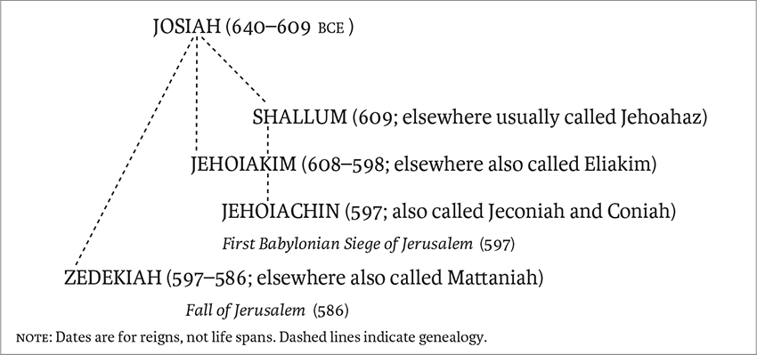
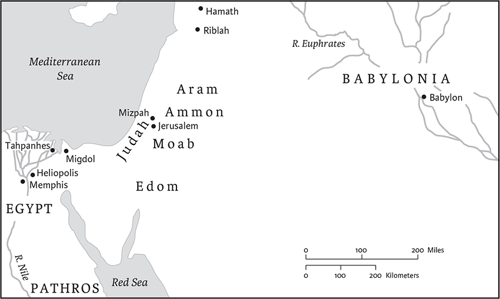
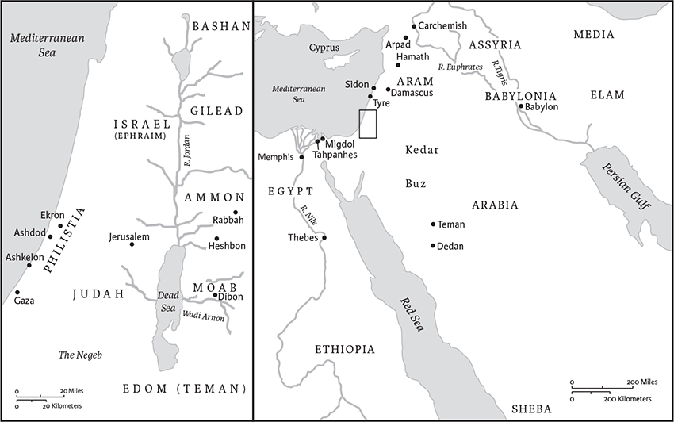

Jeremiah
Name, Canonical Location, and Contents
The book of Jeremiah, the second of the major prophets, is in chronological order between Isaiah and Ezekiel. Named for the prophet Jeremiah and written for the survivors of three Babylonian incursions against Judah (598, 587, and 582 bce), the book portrays a world of trauma. The book reenacts the disastrous events of Judah's final decades as a national and religious community: the destruction of Jerusalem and its sanctuary, the end of political independence, the forfeiture of land, and the death and deportation of thousands. While the details of these losses are debated, Jeremiah interprets them as meaning-making events that signal the end of the nation's social and symbolic worlds, even the collapse of the order of creation (4.23–26). The losses frame and define the text. They engulf the text in suffering, and they form a tapestry of grief that envelops Jeremiah and Judah, as well as the cosmos and its creator.
The book of Jeremiah contains both poetry and artistic prose. Poetry, especially the genre of lament or the dirge, dominates the first half of the book (chs 1–25). Even Jeremiah's oracles of judgment are often in the cadence of lamentations, as are the prophet's prayers, his so-called “confessions.” Prose narratives predominate in the second half of the book (chs 26–52). The “Baruch narrative,” the longest prose narrative in Jeremiah (chs 36–45), for example, has been described as a story of Jeremiah's suffering. Altogether the first half of Jeremiah predicts the traumatic end of the nation, whereas the second half depicts it, which some construed as the annulment of hope.
Historical Context
The prophet Jeremiah was the son of Hilkiah, a priest from Anathoth (1.1). The family may have been descended from the priest Abiathar, who was banished by Solomon to Anathoth (1 Kings 2.26,27). Jeremiah lived during the critical years spanning the reign of the King Josiah (640–609 bce) and the subsequent fall and destruction of Jerusalem and the deportation of part of the Judean population into captivity (597–586 bce), all at the hand of Nebuchadrezzar II of Babylon. Although some scholars interpret chs 2–6 and perhaps portions of chs 30–31 as the prophet's early preaching during Josiah's reign, no material in the book can be assigned to that time with certainty. Moreover, even though the prose sermons and the biographical narratives in the book bear strong linguistic resemblance to Deuteronomy and the Deuteronomistic History (Joshua–2 Kings), Jeremiah does not specifically mention Josiah's religious reform inspired by the discovery in the Temple of the “book of the law” in 622 bce (2 Kings 22–23). These difficulties lead some scholars to regard 627 as the date of Jeremiah's birth (1.5) rather than as the beginning of his public career. After the fall of Jerusalem in 586 bce, Jeremiah and his secretary Baruch chose to remain in Judah with Gedaliah, who had been appointed governor by the Babylonians. After Gedaliah's murder, the Judeans who had been with Gedaliah fled to Egypt, forcibly taking Jeremiah and Baruch with them. Jeremiah is last heard speaking judgment oracles against this community in Egypt in the years following 586 bce (chs 40–45).
Structure, Composition, and Literary History
Although the book of Jeremiah has its origins in the poetic prophetic oracles uttered by Jeremiah, these have been arranged in groupings that are not simply chronological. Moreover, alongside the prophetic oracles, the book also contains a good deal of prose—often written in the third person, influenced by the language and theology of Deuteronomy and the Deuteronomistic History (Joshua, Judges, Samuel, and Kings), and including the historical appendix (ch 52) borrowed and expanded from 2 Kings 24.28–25.30. There are also many doublets (7.1–15 || 26.4–6; 7.32 || 19.6; 16.14–15 || 23.7–8). A system of superscriptions and chronological notes may have been inserted to make the book conform to the Deuteronomistic History. The relationship between the Hebrew Masoretic text (MT) and the Greek Septuagint (LXX) is also complicated; the text of the LXX is about one-eighth shorter than the MT, and has a different location for the oracles against the foreign nations (MT 25.15–38; chs. 46–51). One Hebrew manuscript from Qumran (4Q71) is close to the LXX. All of these features suggest that the book of Jeremiah was produced through a long process of editorial activity.

The last kings of Judah in the book of Jeremiah.
The book of Jeremiah is not entirely chaotic, but is made up of composite collections that are meaningfully arranged. The first half of the book, chs 1–25, includes accusations and indictments against Judah and Jerusalem, which anticipate the nation's dismantling and death. This collection may have its origin in the scrolls of judgment oracles that Jeremiah is said to have dictated to Baruch (ch 36). The second half, chs 26–52, gives more attention to survival and hope. Chapters 27–29 are comprised of narratives about prophets with conflicting interpretations of Judah's future. At the center is the “Book of Consolation,” an anthology of oracles and narratives of restoration (chs 30–33). Chapters 36–45, the so-called Baruch narrative, is a story of Jeremiah's suffering and survival during Judah's most vexing days. Chapters 46–51, oracles against the nations, close the Hebrew text of Jeremiah (MT) with a triumphant note of God's victory over archenemy Babylon. Thus, as a whole, the book testifies to the divine work of both “plucking up and pulling down” and of “building and planting” (1.10).
In addition, the prose sermons in Jeremiah create a degree of order. They provide commentary and create a sense of narrative progression in the poetic contexts of chs 1–25. For example, the prose sermons frustrate Judah's belief that God is unconditionally tied to its preexilic arrangements, as Jeremiah proclaims that Judah's cherished beliefs and institutions—the Temple, covenant, election, land claims, and dynasty—will not protect the nation from looming disaster. Accordingly, the prophet assaults Judah's worship at the Jerusalem Temple (ch 7), declares that the ancient covenant curses rather than blesses (ch 11), scrutinizes Israel's election tradition (ch 18), subverts dynastic rights (ch 21), and sabotages ancient land claims (ch 25). Though such attacks were likely unwelcome, they aimed to help a displaced Judean community in Babylon relinquish its former world for a new social setting.
Finally, the persona of Jeremiah provides some order. Unlike other biblical prophets whose oracles eclipse their characters, stories about Jeremiah, his experiences, and his prayers are as important as his oracles. This archetypal figure not only speaks for God but engages God's purposes and pathos in his own life. In this capacity, Jeremiah himself becomes God's prophetic message. His devotion to God and suffering service, his life of supplication and protest, all take on paradigmatic force. In the end, Jeremiah emerges as God's suffering servant, not unlike Second Isaiah's “servant of the Lord.” Jeremiah endures enormous hardship at the hands of his enemies. He faces scorn and humiliation, suffers unjustly and in solidarity with the poor, and does not cower though his life is endangered. As a representative of war-torn people, Jeremiah testifies that suffering is neither shameful nor a sign of divine displeasure but rather an indication of one's devotion to God. This unifying portrayal of Jeremiah organizes the text's seemingly dissonant world.
Louis Stulman
1 The words of Jeremiah son of Hilkiah, of the priests who were in Anathoth in the land of Benjamin, 2to whom the word of the Lord came in the days of King Josiah son of Amon of Judah, in the thirteenth year of his reign. 3It came also in the days of King Jehoiakim son of Josiah of Judah, and until the end of the eleventh year of King Zedekiah son of Josiah of Judah, until the captivity of Jerusalem in the fifth month.
6Then I said, “Ah, Lord God! Truly I do not know how to speak, for I am only a boy.” 7But the Lord said to me,
“Do not say, ‘I am only a boy’;
for you shall go to all to whom I send you,
and you shall speak whatever I command you.
8Do not be afraid of them,
for I am with you to deliver you,
says the Lord.”
9Then the Lord put out his hand and
touched my mouth; and the Lord said to me,
“Now I have put my words in your mouth.
10See, today I appoint you over nations and over kingdoms,
to pluck up and to pull down,
to destroy and to overthrow,
to build and to plant.”
11The word of the Lord came to me, saying, “Jeremiah, what do you see?” And I said, “I see a branch of an almond tree.”a 12Then the Lord said to me, “You have seen well, for I am watchingb over my word to perform it.” 13The word of the Lord came to me a second time, saying, “What do you see?” And I said, “I see a boiling pot, tilted away from the north.”
14Then the Lord said to me: Out of the north disaster shall break out on all the inhabitants of the land. 15For now I am calling all the tribes of the kingdoms of the north, says the Lord; and they shall come and all of them shall set their thrones at the entrance of the gates of Jerusalem, against all its surrounding walls and against all the cities of Judah. 16And I will utter my judgments against them, for all their wickedness in forsaking me; they have made offerings to other gods, and worshiped the works of their own hands. 17But you, gird up your loins; stand up and tell them everything that I command you. Do not break down before them, or I will break you before them. 18And I for my part have made you today a fortified city, an iron pillar, and a bronze wall, against the whole land—against the kings of Judah, its princes, its priests, and the people of the land. 19They will fight against you; but they shall not prevail against you, for I am with you, says the Lord, to deliver you.
2 The word of the Lord came to me, saying: 2Go and proclaim in the hearing of Jerusalem, Thus says the Lord:
I remember the devotion of your youth,
your love as a bride,
how you followed me in the wilderness,
in a land not sown.
3Israel was holy to the Lord,
the first fruits of his harvest.
All who ate of it were held guilty;
disaster came upon them,
says the Lord.
4Hear the word of the Lord, O house of Jacob, and all the families of the house of Israel. 5Thus says the Lord:
What wrong did your ancestors find in me
that they went far from me,
and went after worthless things, and
became worthless themselves?
6They did not say, “Where is the Lord
who brought us up from the land of Egypt,
who led us in the wilderness,
in a land of deserts and pits,
in a land of drought and deep darkness,
in a land that no one passes through,
where no one lives?”
7I brought you into a plentiful land
to eat its fruits and its good things.
But when you entered you defiled my land,
and made my heritage an abomination.
8The priests did not say, “Where is the Lord?”
Those who handle the law did not know me;
the rulersa transgressed against me;
the prophets prophesied by Baal,
and went after things that do not profit.
9Therefore once more I accuse you,
says the Lord,
and I accuse your children's children.
10Cross to the coasts of Cyprus and look,
send to Kedar and examine with care;
see if there has ever been such a thing.
11Has a nation changed its gods,
even though they are no gods?
But my people have changed their glory
for something that does not profit.
12Be appalled, O heavens, at this,
be shocked, be utterly desolate,
says the Lord,
13for my people have committed two evils:
they have forsaken me,
the fountain of living water,
and dug out cisterns for themselves, cracked cisterns
that can hold no water.
14Is Israel a slave? Is he a homeborn servant?
Why then has he become plunder?
15The lions have roared against him,
they have roared loudly.
They have made his land a waste;
his cities are in ruins, without inhabitant.
16Moreover, the people of Memphis and Tahpanhes
have broken the crown of your head.
17Have you not brought this upon yourself
by forsaking the Lord your God,
while he led you in the way?
18What then do you gain by going to Egypt,
to drink the waters of the Nile?
Or what do you gain by going to Assyria,
to drink the waters of the Euphrates?
19Your wickedness will punish you,
and your apostasies will convict you.
Know and see that it is evil and bitter
for you to forsake the Lord your God;
the fear of me is not in you,
says the Lord God of hosts.
20For long ago you broke your yoke
and burst your bonds,
and you said, “I will not serve!”
On every high hill
and under every green tree
you sprawled and played the whore.
21Yet I planted you as a choice vine,
from the purest stock.
How then did you turn degenerate
and become a wild vine?
22Though you wash yourself with lye
and use much soap,
the stain of your guilt is still before me,
says the Lord God.
23How can you say, “I am not defiled,
I have not gone after the Baals”?
Look at your way in the valley;
know what you have done—
a restive young camel interlacing her tracks,
24a wild ass at home in the wilderness,
in her heat sniffing the windtt
Who can restrain her lust
None who seek her need weary themselves;
in her month they will find her.
25Keep your feet from going unshod
and your throat from thirst.
But you said, “It is hopeless,
for I have loved strangers,
and after them I will go.”
26As a thief is shamed when caught,
so the house of Israel shall be shamed—
they, their kings, their officials,
their priests, and their prophets,
27who say to a tree, “You are my father,”
and to a stone, “You gave me birth.”
For they have turned their backs to me,
and not their faces.
But in the time of their trouble they say,
“Come and save us!”
28But where are your gods
that you made for yourself?
Let them come, if they can save you,
in your time of trouble;
for you have as many gods
as you have towns, O Judah.
29Why do you complain against me?
You have all rebelled against me,
says the Lord.
30In vain I have struck down your children;
they accepted no correction.
Your own sword devoured your prophets
like a ravening lion.
31And you, O generation, behold the word of the Lord!a
Have I been a wilderness to Israel,
or a land of thick darkness?
Why then do my people say, “We are free,
we will come to you no more”?
32Can a girl forget her ornaments,
or a bride her attire?
Yet my people have forgotten me,
days without number.
33How well you direct your course
to seek lovers!
So that even to wicked women
you have taught your ways.
34Also on your skirts is found
the lifeblood of the innocent poor,
though you did not catch them breaking in.
Yet in spite of all these thingsa
35you say, “I am innocent;
surely his anger has turned from me.”
Now I am bringing you to judgment
for saying, “I have not sinned.”
36How lightly you gad about,
changing your ways!
You shall be put to shame by Egypt
as you were put to shame by Assyria.
37From there also you will come away
with your hands on your head;
for the Lord has rejected those in whom you trust,
and you will not prosper through them.
3 If a a man divorces his wife
and she goes from him
and becomes another man's wife,
will he return to her?
Would not such a land be greatly polluted?
You have played the whore with many lovers;
and would you return to me?
says the Lord.
2Look up to the bare heights,b and see!
Where have you not been lain with?
By the waysides you have sat waiting for lovers,
like a nomad in the wilderness.
You have polluted the land
with your whoring and wickedness.
3Therefore the showers have been withheld,
and the spring rain has not come;
yet you have the forehead of a whore,
you refuse to be ashamed.
4Have you not just now called to me,
“My Father, you are the friend of my youth—
5will he be angry forever,
will he be indignant to the end?”
This is how you have spoken,
but you have done all the evil that you could.
6The Lord said to me in the days of King Josiah: Have you seen what she did, that faithless one, Israel, how she went up on every high hill and under every green tree, and played the whore there? 7And I thought, “After she has done all this she will return to me”; but she did not return, and her false sister Judah saw it. 8Shec saw that for all the adulteries of that faithless one, Israel, I had sent her away with a decree of divorce; yet her false sister Judah did not fear, but she too went and played the whore. 9Because she took her whoredom so lightly, she polluted the land, committing adultery with stone and tree. 10Yet for all this her false sister Judah did not return to me with her whole heart, but only in pretense, says the Lord.
11Then the Lord said to me: Faithless Israel has shown herself less guilty than false Judah. 12Go, and proclaim these words toward the north, and say:
Return, faithless Israel,
says the Lord.
I will not look on you in anger,
for I am merciful,
says the Lord;
I will not be angry forever.
13Only acknowledge your guilt,
that you have rebelled against the Lord your God,
and scattered your favors among strangers under every green tree,
and have not obeyed my voice,
says the Lord.
14Return, O faithless children,
says the Lord,
for I am your master;
I will take you, one from a city and two from a family,
and I will bring you to Zion.
15I will give you shepherds after my own heart, who will feed you with knowledge and understanding. 16And when you have multiplied and increased in the land, in those days, says the Lord, they shall no longer say, “The ark of the covenant of the Lord.” It shall not come to mind, or be remembered, or missed; nor shall another one be made. 17At that time Jerusalem shall be called the throne of the Lord, and all nations shall gather to it, to the presence of the Lord in Jerusalem, and they shall no longer stubbornly follow their own evil will. 18In those days the house of Judah shall join the house of Israel, and together they shall come from the land of the north to the land that I gave your ancestors for a heritage.
19I thought
how I would set you among my children,
and give you a pleasant land,
the most beautiful heritage of all the nations.
And I thought you would call me, My Father,
and would not turn from following me.
20Instead, as a faithless wife leaves her husband,
so you have been faithless to me,
O house of Israel,
says the Lord.
24“But from our youth the shameful thing has devoured all for which our ancestors had labored, their flocks and their herds, their sons and their daughters. 25Let us lie down in our shame, and let our dishonor cover us; for we have sinned against the Lord our God, we and our ancestors, from our youth even to this day; and we have not obeyed the voice of the Lord our God.”
4
If you return, O Israel,
says the Lord,
if you return to me,
if you remove your abominations from my presence,
and do not waver,
2and if you swear, “As the Lord lives!”
in truth, in justice, and in uprightness,
then nations shall be blesseda by him,
and by him they shall boast.
3For thus says the Lord to the people of
Judah and to the inhabitants of Jerusalem:
Break up your fallow ground,
and do not sow among thorns.
4Circumcise yourselves to the Lord,
remove the foreskin of your hearts,
O people of Judah and inhabitants of Jerusalem,
or else my wrath will go forth like fire,
and burn with no one to quench it,
because of the evil of your doings.
5Declare in Judah, and proclaim in Jerusalem, and say:
Blow the trumpet through the land;
shout aloudb and say,
“Gather together, and let us go
into the fortified cities!”
6Raise a standard toward Zion,
flee for safety, do not delay,
for I am bringing evil from the north,
and a great destruction.
7A lion has gone up from its thicket,
a destroyer of nations has set out;
he has gone out from his place
to make your land a waste;
your cities will be ruins
without inhabitant.
8Because of this put on sackcloth,
lament and wail:
“The fierce anger of the Lord
has not turned away from us.”
9On that day, says the Lord, courage shall fail the king and the officials; the priests shall be appalled and the prophets astounded. 10Then I said, “Ah, Lord God, how utterly you have deceived this people and Jerusalem, saying, ‘It shall be well with you,’ even while the sword is at the throat!”
11At that time it will be said to this people and to Jerusalem: A hot wind comes from me out of the bare heightsc in the desert toward my poor people, not to winnow or cleanse— 12a wind too strong for that. Now it is I who speak in judgment against them.
13Look! He comes up like clouds,
his chariots like the whirlwind;
his horses are swifter than eagles—
woe to us, for we are ruined!
14O Jerusalem, wash your heart clean of wickedness
so that you may be saved.
How long shall your evil schemes
lodge within you?
15For a voice declares from Dan
and proclaims disaster from Mount Ephraim.
16Tell the nations, “Here they are!”
Proclaim against Jerusalem,
“Besiegers come from a distant land;
they shout against the cities of Judah.
17They have closed in around her like watchers of a field,
because she has rebelled against me,
says the Lord.
18Your ways and your doings
have brought this upon you.
This is your doom; how bitter it is!
It has reached your very heart.”
19My anguish, my anguish! I writhe in pain!
Oh, the walls of my heart!
My heart is beating wildly;
I cannot keep silent;
for Ia hear the sound of the trumpet,
the alarm of war.
20Disaster overtakes disaster,
the whole land is laid waste.
Suddenly my tents are destroyed,
my curtains in a moment.
21How long must I see the standard,
and hear the sound of the trumpet?
22“For my people are foolish,
they do not know me;
they are stupid children,
they have no understanding.
They are skilled in doing evil,
but do not know how to do good.”
23I looked on the earth, and lo, it was waste and void;
and to the heavens, and they had no light.
24I looked on the mountains, and lo, they were quaking,
and all the hills moved to and fro.
25I looked, and lo, there was no one at all,
and all the birds of the air had fled.
26I looked, and lo, the fruitful land was a desert,
and all its cities were laid in ruins
before the Lord, before his fierce anger.
27For thus says the Lord: The whole land shall be a desolation; yet I will not make a full end.
28Because of this the earth shall mourn,
and the heavens above grow black;
for I have spoken, I have purposed;
I have not relented nor will I turn back.
29At the noise of horseman and archer
every town takes to flight;
they enter thickets; they climb among rocks;
all the towns are forsaken,
and no one lives in them.
30And you, O desolate one,
what do you mean that you dress in crimson,
that you deck yourself with ornaments of gold,
that you enlarge your eyes with paint?
In vain you beautify yourself.
Your lovers despise you;
they seek your life.
31For I heard a cry as of a woman in labor,
anguish as of one bringing forth her first child,
the cry of daughter Zion gasping for breath,
stretching out her hands,
“Woe is me! I am fainting before killers!”
5
Run to and fro through the streets of Jerusalem,
look around and take note!
Search its squares and see
if you can find one person
who acts justly
and seeks truth—
so that I may pardon Jerusalem.a
2Although they say, “As the Lord lives,”
yet they swear falsely.
3O Lord, do your eyes not look for truth?
You have struck them,
but they felt no anguish;
you have consumed them,
but they refused to take correction.
They have made their faces harder than rock;
they have refused to turn back.
4Then I said, “These are only the poor,
they have no sense;
for they do not know the way of the Lord,
the law of their God.
and speak to them;
surely they know the way of the Lord,
the law of their God.”
But they all alike had broken the yoke,
they had burst the bonds.
6Therefore a lion from the forest shall kill them,
a wolf from the desert shall destroy them.
A leopard is watching against their cities;
everyone who goes out of them shall be torn in pieces—
because their transgressions are many,
their apostasies are great.
7How can I pardon you?
Your children have forsaken me,
and have sworn by those who are no gods.
When I fed them to the full,
they committed adultery
and trooped to the houses of prostitutes.
8They were well-fed lusty stallions,
each neighing for his neighbor's wife.
9Shall I not punish them for these things?
says the Lord;
and shall I not bring retribution
on a nation such as this?
10Go up through her vine-rows and destroy,
but do not make a full end;
strip away her branches,
for they are not the Lord's.
11For the house of Israel and the house of Judah
have been utterly faithless to me,
says the Lord.
12They have spoken falsely of the Lord,
and have said, “He will do nothing.
No evil will come upon us,
and we shall not see sword or famine.”
13The prophets are nothing but wind,
for the word is not in them.
Thus shall it be done to them!
14Therefore thus says the Lord, the God of hosts:
Because theya have spoken this word,
I am now making my words in your mouth a fire,
and this people wood, and the fire shall devour them.
15I am going to bring upon you
a nation from far away, O house of Israel,
says the Lord.
It is an enduring nation,
it is an ancient nation,
a nation whose language you do not know,
nor can you understand what they say.
16Their quiver is like an open tomb;
all of them are mighty warriors.
17They shall eat up your harvest and your food;
they shall eat up your sons and your daughters;
they shall eat up your flocks and your herds;
they shall eat up your vines and your fig trees;
they shall destroy with the sword
your fortified cities in which you trust.
18But even in those days, says the Lord, I will not make a full end of you. 19And when your people say, “Why has the Lord our God done all these things to us?” you shall say to them, “As you have forsaken me and served foreign gods in your land, so you shall serve strangers in a land that is not yours.”
20Declare this in the house of Jacob,
proclaim it in Judah:
21Hear this, O foolish and senseless people,
who have eyes, but do not see,
who have ears, but do not hear.
22Do you not fear me? says the Lord;
Do you not tremble before me?
I placed the sand as a boundary for the sea,
a perpetual barrier that it cannot pass;
though the waves toss, they cannot prevail,
though they roar, they cannot pass over it.
23But this people has a stubborn and rebellious heart;
they have turned aside and gone away.
24They do not say in their hearts,
“Let us fear the Lord our God,
who gives the rain in its season,
the autumn rain and the spring rain,
and keeps for us
the weeks appointed for the harvest.”
25Your iniquities have turned these away,
and your sins have deprived you of good.
26For scoundrels are found among my people;
they take over the goods of others.
Like fowlers they set a trap;a
they catch human beings.
27Like a cage full of birds,
their houses are full of treachery;
therefore they have become great and rich,
28they have grown fat and sleek.
They know no limits in deeds of wickedness;
they do not judge with justice
the cause of the orphan, to make it prosper,
and they do not defend the rights of the needy.
29Shall I not punish them for these things?
says the Lord,
and shall I not bring retribution
on a nation such as this?
6
Flee for safety, O children of Benjamin,
from the midst of Jerusalem!
Blow the trumpet in Tekoa,
and raise a signal on Beth-haccherem;
for evil looms out of the north,
and great destruction.
2I have likened daughter Zion
to the loveliest pasture.c
3Shepherds with their flocks shall come against her.
They shall pitch their tents around her;
they shall pasture, all in their places.
4“Prepare war against her;
up, and let us attack at noon!”
“Woe to us, for the day declines,
the shadows of evening lengthen!”
5“Up, and let us attack by night,
and destroy her palaces!”
6For thus says the Lord of hosts:
Cut down her trees;
cast up a siege ramp against Jerusalem.
This is the city that must be punished;d
there is nothing but oppression within her.
7As a well keeps its water fresh,
so she keeps fresh her wickedness;
violence and destruction are heard within her;
sickness and wounds are ever before me.
8Take warning, O Jerusalem,
or I shall turn from you in disgust,
and make you a desolation,
an uninhabited land.
9Thus says the Lord of hosts:
Gleana thoroughly as a vine
the remnant of Israel;
like a grape-gatherer, pass your hand again
over its branches.
10To whom shall I speak and give warning,
that they may hear?
See, their ears are closed,b
they cannot listen.
The word of the Lord is to them an object of scorn;
they take no pleasure in it.
11But I am full of the wrath of the Lord;
I am weary of holding it in.
Pour it out on the children in the street,
and on the gatherings of young men as well;
both husband and wife shall be taken,
the old folk and the very aged.
12Their houses shall be turned over to others,
their fields and wives together;
for I will stretch out my hand
against the inhabitants of the land,
says the Lord.
13For from the least to the greatest of them,
everyone is greedy for unjust gain;
and from prophet to priest,
everyone deals falsely.
14They have treated the wound of my people carelessly,
saying, “Peace, peace,”
when there is no peace.
15They acted shamefully, they committed abomination;
yet they were not ashamed,
they did not know how to blush.
Therefore they shall fall among those who fall;
at the time that I punish them, they shall be overthrown,
says the Lord.
16Thus says the Lord:
Stand at the crossroads, and look,
and ask for the ancient paths,
where the good way lies; and walk in it,
and find rest for your souls.
But they said, “We will not walk in it.”
17Also I raised up sentinels for you:
“Give heed to the sound of the trumpet!”
But they said, “We will not give heed.”
18Therefore hear, O nations,
and know, O congregation, what will happen to them.
19Hear, O earth; I am going to bring disaster on this people,
the fruit of their schemes,
because they have not given heed to my words;
and as for my teaching, they have rejected it.
20Of what use to me is frankincense that comes from Sheba,
or sweet cane from a distant land?
Your burnt offerings are not acceptable,
nor are your sacrifices pleasing to me.
21Therefore thus says the Lord:
See, I am laying before this people
stumbling blocks against which they shall stumble;
parents and children together,
neighbor and friend shall perish.
22Thus says the Lord:
See, a people is coming from the land of the north,
a great nation is stirring from the farthest parts of the earth.
23They grasp the bow and the javelin,
they are cruel and have no mercy,
their sound is like the roaring sea;
they ride on horses,
equipped like a warrior for battle,
against you, O daughter Zion!
24“We have heard news of them,
our hands fall helpless;
anguish has taken hold of us,
pain as of a woman in labor.
25Do not go out into the field,
or walk on the road;
for the enemy has a sword,
terror is on every side.”
26O my poor people, put on sackcloth,
and roll in ashes;
make mourning as for an only child,
most bitter lamentation:
for suddenly the destroyer
will come upon us.
27I have made you a tester and a refinera among my people
so that you may know and test their ways.
28They are all stubbornly rebellious,
going about with slanders;
they are bronze and iron,
all of them act corruptly.
29The bellows blow fiercely,
the lead is consumed by the fire;
in vain the refining goes on,
for the wicked are not removed.
30They are called “rejected silver,”
for the Lord has rejected them.
7 The word that came to Jeremiah from the Lord: 2Stand in the gate of the Lord's house, and proclaim there this word, and say, Hear the word of the Lord, all you people of Judah, you that enter these gates to worship the Lord. 3Thus says the Lord of hosts, the God of Israel: Amend your ways and your doings, and let me dwell with youa in this place. 4Do not trust in these deceptive words: “This isb the temple of the Lord, the temple of the Lord, the temple of the Lord.”
5For if you truly amend your ways and your doings, if you truly act justly one with another, 6if you do not oppress the alien, the orphan, and the widow, or shed innocent blood in this place, and if you do not go after other gods to your own hurt, 7then I will dwell with you in this place, in the land that I gave of old to your ancestors forever and ever.
8Here you are, trusting in deceptive words to no avail. 9Will you steal, murder, commit adultery, swear falsely, make offerings to Baal, and go after other gods that you have not known, 10and then come and stand before me in this house, which is called by my name, and say, “We are safe!”—only to go on doing all these abominations? 11Has this house, which is called by my name, become a den of robbers in your sight? You know, I too am watching, says the Lord. 12Go now to my place that was in Shiloh, where I made my name dwell at first, and see what I did to it for the wickedness of my people Israel. 13And now, because you have done all these things, says the Lord, and when I spoke to you persistently, you did not listen, and when I called you, you did not answer, 14therefore I will do to the house that is called by my name, in which you trust, and to the place that I gave to you and to your ancestors, just what I did to Shiloh. 15And I will cast you out of my sight, just as I cast out all your kinsfolk, all the offspring of Ephraim.
16As for you, do not pray for this people, do not raise a cry or prayer on their behalf, and do not intercede with me, for I will not hear you. 17Do you not see what they are doing in the towns of Judah and in the streets of Jerusalem? 18The children gather wood, the fathers kindle fire, and the women knead dough, to make cakes for the queen of heaven; and they pour out drink offerings to other gods, to provoke me to anger. 19Is it I whom they provoke? says the Lord. Is it not themselves, to their own hurt? 20Therefore thus says the Lord God: My anger and my wrath shall be poured out on this place, on human beings and animals, on the trees of the field and the fruit of the ground; it will burn and not be quenched.
21Thus says the Lord of hosts, the God of Israel: Add your burnt offerings to your sacrifices, and eat the flesh. 22For in the day that I brought your ancestors out of the land of Egypt, I did not speak to them or command them concerning burnt offerings and sacrifices. 23But this command I gave them, “Obey my voice, and I will be your God, and you shall be my people; and walk only in the way that I command you, so that it may be well with you.” 24Yet they did not obey or incline their ear, but, in the stubbornness of their evil will, they walked in their own counsels, and looked backward rather than forward. 25From the day that your ancestors came out of the land of Egypt until this day, I have persistently sent all my servants the prophets to them, day after day; 26yet they did not listen to me, or pay attention, but they stiffened their necks. They did worse than their ancestors did.
27So you shall speak all these words to them, but they will not listen to you. You shall call to them, but they will not answer you. 28You shall say to them: This is the nation that did not obey the voice of the Lord their God, and did not accept discipline; truth has perished; it is cut off from their lips.
30For the people of Judah have done evil in my sight, says the Lord; they have set their abominations in the house that is called by my name, defiling it. 31And they go on building the high placeb of Topheth, which is in the valley of the son of Hinnom, to burn their sons and their daughters in the fire—which I did not command, nor did it come into my mind. 32Therefore, the days are surely coming, says the Lord, when it will no more be called Topheth, or the valley of the son of Hinnom, but the valley of Slaughter: for they will bury in Topheth until there is no more room. 33The corpses of this people will be food for the birds of the air, and for the animals of the earth; and no one will frighten them away. 34And I will bring to an end the sound of mirth and gladness, the voice of the bride and bridegroom in the cities of Judah and in the streets of Jerusalem; for the land shall become a waste.
8 At that time, says the Lord, the bones of the kings of Judah, the bones of its officials, the bones of the priests, the bones of the prophets, and the bones of the inhabitants of Jerusalem shall be brought out of their tombs; 2and they shall be spread before the sun and the moon and all the host of heaven, which they have loved and served, which they have followed, and which they have inquired of and worshiped; and they shall not be gathered or buried; they shall be like dung on the surface of the ground. 3Death shall be preferred to life by all the remnant that remains of this evil family in all the places where I have driven them, says the Lord of hosts.
4You shall say to them, Thus says the Lord:
When people fall, do they not get up again?
If they go astray, do they not turn back?
5Why then has this peoplea turned away
in perpetual backsliding?
They have held fast to deceit,
they have refused to return.
6I have given heed and listened,
but they do not speak honestly;
no one repents of wickedness,
saying, “What have I done!”
All of them turn to their own course,
like a horse plunging headlong into battle.
7Even the stork in the heavens knows its times;
and the turtledove, swallow, and craneb
observe the time of their coming;
but my people do not know
the ordinance of the Lord.
8How can you say, “We are wise,
and the law of the Lord is with us,”
when, in fact, the false pen of the scribes
has made it into a lie?
9The wise shall be put to shame,
they shall be dismayed and taken;
since they have rejected the word of the Lord,
what wisdom is in them?
10Therefore I will give their wives to others
and their fields to conquerors,
because from the least to the greatest
everyone is greedy for unjust gain;
from prophet to priest
everyone deals falsely.
11They have treated the wound of my people carelessly,
saying, “Peace, peace,”
when there is no peace.
12They acted shamefully, they committed abomination;
yet they were not at all ashamed,
they did not know how to blush.
Therefore they shall fall among those who fall;
at the time when I punish them, they shall be overthrown,
says the Lord.
13When I wanted to gather them, says the Lord,
there area no grapes on the vine,
nor figs on the fig tree;
even the leaves are withered,
and what I gave them has passed away from them.b
14Why do we sit still?
Gather together, let us go into the fortified cities
and perish there;
for the Lord our God has doomed us to perish,
and has given us poisoned water to drink,
because we have sinned against the Lord.
15We look for peace, but find no good,
for a time of healing, but there is terror instead.
16The snorting of their horses is heard from Dan;
at the sound of the neighing of their stallions
the whole land quakes.
They come and devour the land and all that fills it,
the city and those who live in it.
17See, I am letting snakes loose among you,
adders that cannot be charmed,
and they shall bite you,
says the Lord.
18My joy is gone, grief is upon me,
my heart is sick.
19Hark, the cry of my poor people
from far and wide in the land:
“Is the Lord not in Zion?
Is her King not in her?”
(“Why have they provoked me to anger with their images,
with their foreign idols?”)
20“The harvest is past, the summer is ended,
and we are not saved.”
21For the hurt of my poor people I am hurt,
I mourn, and dismay has taken hold of me.
22Is there no balm in Gilead?
Is there no physician there?
Why then has the health of my poor people
not been restored?
9
c O that my head were a spring of water,
and my eyes a fountain of tears,
so that I might weep day and night
for the slain of my poor people!
a traveler's lodging place,
that I might leave my people
and go away from them!
For they are all adulterers,
a band of traitors.
3They bend their tongues like bows;
they have grown strong in the land for falsehood, and not for truth;
for they proceed from evil to evil,
and they do not know me, says the Lord.
4Beware of your neighbors,
and put no trust in any of your kin;a
for all your kinb are supplanters,
and every neighbor goes around like a slanderer.
5They all deceive their neighbors,
and no one speaks the truth;
they have taught their tongues to speak lies;
they commit iniquity and are too weary to repent.c
6Oppression upon oppression, deceitd upon deceit!
They refuse to know me, says the Lord.
7Therefore thus says the Lord of hosts:
I will now refine and test them,
for what else can I do with my sinful people?e
8Their tongue is a deadly arrow;
it speaks deceit through the mouth.
They all speak friendly words to their neighbors,
but inwardly are planning to lay an ambush.
9Shall I not punish them for these things? says the Lord;
and shall I not bring retribution
on a nation such as this?
10Take upf weeping and wailing for the mountains,
and a lamentation for the pastures of the wilderness,
because they are laid waste so that no one passes through,
and the lowing of cattle is not heard;
both the birds of the air and the animals
have fled and are gone.
11I will make Jerusalem a heap of ruins, a lair of jackals;
and I will make the towns of Judah a desolation,
without inhabitant.
12Who is wise enough to understand this? To whom has the mouth of the Lord spoken, so that they may declare it? Why is the land ruined and laid waste like a wilderness, so that no one passes through? 13And the Lord says: Because they have forsaken my law that I set before them, and have not obeyed my voice, or walked in accordance with it, 14but have stubbornly followed their own hearts and have gone after the Baals, as their ancestors taught them. 15Therefore thus says the Lord of hosts, the God of Israel: I am feeding this people with wormwood, and giving them poisonous water to drink. 16I will scatter them among nations that neither they nor their ancestors have known; and I will send the sword after them, until I have consumed them.
17Thus says the Lord of hosts:
Consider, and call for the mourning women to come;
send for the skilled women to come;
18let them quickly raise a dirge over us,
so that our eyes may run down with tears,
and our eyelids flow with water.
19For a sound of wailing is heard from Zion:
“How we are ruined!
We are utterly shamed,
because we have left the land,
because they have cast down our dwellings.”
20Hear, O women, the word of the Lord,
and let your ears receive the word of his mouth;
teach to your daughters a dirge,
and each to her neighbor a lament.
21“Death has come up into our windows,
it has entered our palaces,
to cut off the children from the streets
and the young men from the squares.”
22Speak! Thus says the Lord:
“Human corpses shall fall
like dung upon the open field,
like sheaves behind the reaper,
and no one shall gather them.”
23Thus says the Lord: Do not let the wise boast in their wisdom, do not let the mighty boast in their might, do not let the wealthy boast in their wealth; 24but let those who boast boast in this, that they understand and know me, that I am the Lord; I act with steadfast love, justice, and righteousness in the earth, for in these things I delight, says the Lord.
25The days are surely coming, says the Lord, when I will attend to all those who are circumcised only in the foreskin: 26Egypt, Judah, Edom, the Ammonites, Moab, and all those with shaven temples who live in the desert. For all these nations are uncircumcised, and all the house of Israel is uncircumcised in heart.
10 Hear the word that the Lord speaks to you, O house of Israel. 2Thus says the Lord:
Do not learn the way of the nations,
or be dismayed at the signs of the heavens;
for the nations are dismayed at them.
3For the customs of the peoples are false:
a tree from the forest is cut down,
and worked with an ax by the hands of an artisan;
4people deck it with silver and gold;
they fasten it with hammer and nails
so that it cannot move.
5Their idolsa are like scarecrows in a cucumber field,
and they cannot speak;
they have to be carried,
for they cannot walk.
Do not be afraid of them,
for they cannot do evil,
nor is it in them to do good.
6There is none like you, O Lord;
you are great, and your name is great in might.
7Who would not fear you, O King of the nations?
For that is your due;
among all the wise ones of the nations
and in all their kingdoms
there is no one like you.
8They are both stupid and foolish;
the instruction given by idols
is no better than wood!b
9Beaten silver is brought from Tarshish,
and gold from Uphaz.
They are the work of the artisan and of the hands of the goldsmith;
their clothing is blue and purple;
they are all the product of skilled workers.
10But the Lord is the true God;
he is the living God and the everlasting King.
At his wrath the earth quakes,
and the nations cannot endure his indignation.
11Thus shall you say to them: The gods who did not make the heavens and the earth shall perish from the earth and from under the heavens.c
12It is he who made the earth by his power,
who established the world by his wisdom,
and by his understanding stretched out the heavens.
13When he utters his voice, there is a
tumult of waters in the heavens,
and he makes the mist rise from the
ends of the earth.
He makes lightnings for the rain,
and he brings out the wind from his storehouses.
14Everyone is stupid and without knowledge;
goldsmiths are all put to shame by their idols;
for their images are false,
and there is no breath in them.
15They are worthless, a work of delusion;
at the time of their punishment they shall perish.
16Not like these is the Lord,d the portion of Jacob,
for he is the one who formed all things,
and Israel is the tribe of his inheritance;
the Lord of hosts is his name.
17Gather up your bundle from the ground,
O you who live under siege!
18For thus says the Lord:
I am going to sling out the inhabitants of the land
at this time,
and I will bring distress on them,
so that they shall feel it.
19Woe is me because of my hurt!
My wound is severe.
But I said, “Truly this is my punishment,
and I must bear it.”
20My tent is destroyed,
and all my cords are broken;
my children have gone from me,
and they are no more;
there is no one to spread my tent again,
and to set up my curtains.
21For the shepherds are stupid,
and do not inquire of the Lord;
therefore they have not prospered,
and all their flock is scattered.
22Hear, a noise! Listen, it is coming—
a great commotion from the land of the north
to make the cities of Judah a desolation,
a lair of jackals.
23I know, O Lord, that the way of human
beings is not in their control,
that mortals as they walk cannot direct their steps.
24Correct me, O Lord, but in just measure;
not in your anger, or you will bring me to nothing.
25Pour out your wrath on the nations that do not know you,
and on the peoples that do not call on your name;
for they have devoured Jacob;
they have devoured him and consumed him,
and have laid waste his habitation.
11 The word that came to Jeremiah from the Lord: 2Hear the words of this covenant, and speak to the people of Judah and the inhabitants of Jerusalem. 3You shall say to them, Thus says the Lord, the God of Israel: Cursed be anyone who does not heed the words of this covenant, 4which I commanded your ancestors when I brought them out of the land of Egypt, from the iron-smelter, saying, Listen to my voice, and do all that I command you. So shall you be my people, and I will be your God, 5that I may perform the oath that I swore to your ancestors, to give them a land flowing with milk and honey, as at this day. Then I answered, “So be it, Lord.”
6And the Lord said to me: Proclaim all these words in the cities of Judah, and in the streets of Jerusalem: Hear the words of this covenant and do them. 7For I solemnly warned your ancestors when I brought them up out of the land of Egypt, warning them persistently, even to this day, saying, Obey my voice. 8Yet they did not obey or incline their ear, but everyone walked in the stubbornness of an evil will. So I brought upon them all the words of this covenant, which I commanded them to do, but they did not.
9And the Lord said to me: Conspiracy exists among the people of Judah and the inhabitants of Jerusalem. 10They have turned back to the iniquities of their ancestors of old, who refused to heed my words; they have gone after other gods to serve them; the house of Israel and the house of Judah have broken the covenant that I made with their ancestors. 11Therefore, thus says the Lord, assuredly I am going to bring disaster upon them that they cannot escape; though they cry out to me, I will not listen to them. 12Then the cities of Judah and the inhabitants of Jerusalem will go and cry out to the gods to whom they make offerings, but they will never save them in the time of their trouble. 13For your gods have become as many as your towns, O Judah; and as many as the streets of Jerusalem are the altars to shame you have set up, altars to make offerings to Baal.
14As for you, do not pray for this people, or lift up a cry or prayer on their behalf, for I will not listen when they call to me in the time of their trouble. 15What right has my beloved in my house, when she has done vile deeds? Can vowsa and sacrificial flesh avert your doom? Can you then exult? 16The Lord once called you, “A green olive tree, fair with goodly fruit”; but with the roar of a great tempest he will set fire to it, and its branches will be consumed. 17The Lord of hosts, who planted you, has pronounced evil against you, because of the evil that the house of Israel and the house of Judah have done, provoking me to anger by making offerings to Baal.
18It was the Lord who made it known to me, and I knew;
then you showed me their evil deeds.
19But I was like a gentle lamb
led to the slaughter.
And I did not know it was against me
that they devised schemes, saying,
“Let us destroy the tree with its fruit,
let us cut him off from the land of the living,
so that his name will no longer be remembered!”
20But you, O Lord of hosts, who judge righteously,
who try the heart and the mind,
let me see your retribution upon them,
for to you I have committed my cause.
21Therefore thus says the Lord concerning the people of Anathoth, who seek your life, and say, “You shall not prophesy in the name of the Lord, or you will die by our hand”— 22therefore thus says the Lord of hosts: I am going to punish them; the young men shall die by the sword; their sons and their daughters shall die by famine; 23and not even a remnant shall be left of them. For I will bring disaster upon the people of Anathoth, the year of their punishment.
12
You will be in the right, O Lord,
when I lay charges against you;
but let me put my case to you.
Why does the way of the guilty prosper?
Why do all who are treacherous thrive?
2You plant them, and they take root;
they grow and bring forth fruit;
you are near in their mouths
yet far from their hearts.
3But you, O Lord, know me;
You see me and test me—my heart is with you.
Pull them out like sheep for the slaughter,
and set them apart for the day of slaughter.
4How long will the land mourn,
and the grass of every field wither?
For the wickedness of those who live in it
the animals and the birds are swept away,
and because people said, “He is blind to our ways.”a
5If you have raced with foot-runners and they have wearied you,
how will you compete with horses?
And if in a safe land you fall down,
how will you fare in the thickets of the Jordan?
6For even your kinsfolk and your own family,
even they have dealt treacherously with you;
they are in full cry after you;
do not believe them,
though they speak friendly words to you.
7I have forsaken my house,
I have abandoned my heritage;
I have given the beloved of my heart
into the hands of her enemies.
8My heritage has become to me
like a lion in the forest;
she has lifted up her voice against me—
therefore I hate her.
9Is the hyena greedya for my heritage at my command?
Are the birds of prey all around her?
Go, assemble all the wild animals;
bring them to devour her.
10Many shepherds have destroyed my vineyard,
they have trampled down my portion,
they have made my pleasant portion
a desolate wilderness.
11They have made it a desolation;
desolate, it mourns to me.
The whole land is made desolate,
but no one lays it to heart.
12Upon all the bare heightsb in the desert
spoilers have come;
for the sword of the Lord devours
from one end of the land to the other;
no one shall be safe.
13They have sown wheat and have reaped thorns,
they have tired themselves out but profit nothing.
They shall be ashamed of theirc harvests
because of the fierce anger of the Lord.
14Thus says the Lord concerning all my evil neighbors who touch the heritage that I have given my people Israel to inherit: I am about to pluck them up from their land, and I will pluck up the house of Judah from among them. 15And after I have plucked them up, I will again have compassion on them, and I will bring them again to their heritage and to their land, every one of them. 16And then, if they will diligently learn the ways of my people, to swear by my name, “As the Lord lives,” as they taught my people to swear by Baal, then they shall be built up in the midst of my people. 17But if any nation will not listen, then I will completely uproot it and destroy it, says the Lord.
13 Thus said the Lord to me, “Go and buy yourself a linen loincloth, and put it on your loins, but do not dip it in water.” 2So I bought a loincloth according to the word of the Lord, and put it on my loins. 3And the word of the Lord came to me a second time, saying, 4“Take the loincloth that you bought and are wearing, and go now to the Euphrates,d and hide it there in a cleft of the rock.” 5So I went, and hid it by the Euphrates,a as the Lord commanded me. 6And after many days the Lord said to me, “Go now to the Euphrates,b and take from there the loincloth that I commanded you to hide there.” 7Then I went to the Euphrates,b and dug, and I took the loincloth from the place where I had hidden it. But now the loincloth was ruined; it was good for nothing.
8Then the word of the Lord came to me: 9Thus says the Lord: Just so I will ruin the pride of Judah and the great pride of Jerusalem. 10This evil people, who refuse to hear my words, who stubbornly follow their own will and have gone after other gods to serve them and worship them, shall be like this loincloth, which is good for nothing. 11For as the loincloth clings to one's loins, so I made the whole house of Israel and the whole house of Judah cling to me, says the Lord, in order that they might be for me a people, a name, a praise, and a glory. But they would not listen.
12You shall speak to them this word: Thus says the Lord, the God of Israel: Every wine-jar should be filled with wine. And they will say to you, “Do you think we do not know that every wine-jar should be filled with wine?” 13Then you shall say to them: Thus says the Lord: I am about to fill all the inhabitants of this land—the kings who sit on David's throne, the priests, the prophets, and all the inhabitants of Jerusalem—with drunkenness. 14And I will dash them one against another, parents and children together, says the Lord. I will not pity or spare or have compassion when I destroy them.
15Hear and give ear; do not be haughty,
for the Lord has spoken.
16Give glory to the Lord your God
before he brings darkness,
and before your feet stumble
on the mountains at twilight;
while you look for light,
he turns it into gloom
and makes it deep darkness.
17But if you will not listen,
my soul will weep in secret for your pride;
my eyes will weep bitterly and run down with tears,
because the Lord's flock has been taken captive.
18Say to the king and the queen mother:
“Take a lowly seat,
for your beautiful crown
has come down from your head.”c
19The towns of the Negeb are shut up
with no one to open them;
all Judah is taken into exile,
wholly taken into exile.
20Lift up your eyes and see
those who come from the north.
Where is the flock that was given you,
your beautiful flock?
21What will you say when they set as head over you
those whom you have trained
to be your allies?
Will not pangs take hold of you,
like those of a woman in labor?
22And if you say in your heart,
“Why have these things come upon me?”
it is for the greatness of your iniquity
that your skirts are lifted up,
and you are violated.
23Can Ethiopiansa change their skin
or leopards their spots?
Then also you can do good
who are accustomed to do evil.
24I will scatter youb like chaff
driven by the wind from the desert.
25This is your lot,
the portion I have measured out to you, says the Lord,
because you have forgotten me
and trusted in lies.
26I myself will lift up your skirts over your face,
and your shame will be seen.
27I have seen your abominations,
your adulteries and neighings, your shameless prostitutions
on the hills of the countryside.
Woe to you, O Jerusalem!
How long will it be
before you are made clean?
14 The word of the Lord that came to Jeremiah concerning the drought:
2Judah mourns
and her gates languish;
they lie in gloom on the ground,
and the cry of Jerusalem goes up.
3Her nobles send their servants for water;
they come to the cisterns,
they find no water,
they return with their vessels empty.
They are ashamed and dismayed
and cover their heads,
4because the ground is cracked.
Because there has been no rain on the land
the farmers are dismayed;
they cover their heads.
5Even the doe in the field forsakes her newborn fawn
because there is no grass.
6The wild asses stand on the bare heights,c
they pant for air like jackals;
their eyes fail
because there is no herbage.
7Although our iniquities testify against us,
act, O Lord, for your name's sake;
our apostasies indeed are many,
and we have sinned against you.
8O hope of Israel,
its savior in time of trouble,
why should you be like a stranger in the land,
like a traveler turning aside for the night?
9Why should you be like someone confused,
like a mighty warrior who cannot give help?
Yet you, O Lord, are in the midst of us,
and we are called by your name;
do not forsake us!
10Thus says the Lord concerning this people:
Truly they have loved to wander,
they have not restrained their feet;
therefore the Lord does not accept them,
now he will remember their iniquity
and punish their sins.
11The Lord said to me: Do not pray for the welfare of this people. 12Although they fast, I do not hear their cry, and although they offer burnt offering and grain offering, I do not accept them; but by the sword, by famine, and by pestilence I consume them.
13Then I said: “Ah, Lord God! Here are the prophets saying to them, ‘You shall not see the sword, nor shall you have famine, but I will give you true peace in this place.’” 14And the Lord said to me: The prophets are prophesying lies in my name; I did not send them, nor did I command them or speak to them. They are prophesying to you a lying vision, worthless divination, and the deceit of their own minds. 15Therefore thus says the Lord concerning the prophets who prophesy in my name though I did not send them, and who say, “Sword and famine shall not come on this land”: By sword and famine those prophets shall be consumed. 16And the people to whom they prophesy shall be thrown out into the streets of Jerusalem, victims of famine and sword. There shall be no one to bury them—themselves, their wives, their sons, and their daughters. For I will pour out their wickedness upon them.
17You shall say to them this word:
Let my eyes run down with tears night and day,
and let them not cease,
for the virgin daughter—my people—is struck down with a crushing blow,
with a very grievous wound.
18If I go out into the field,
look—those killed by the sword!
And if I enter the city,
look—those sick witha famine!
For both prophet and priest ply their trade throughout the land,
and have no knowledge.
19Have you completely rejected Judah?
Does your heart loathe Zion?
Why have you struck us down
so that there is no healing for us?
We look for peace, but find no good;
for a time of healing, but there is terror instead.
20We acknowledge our wickedness, O Lord,
the iniquity of our ancestors,
for we have sinned against you.
21Do not spurn us, for your name's sake;
do not dishonor your glorious throne;
remember and do not break your covenant with us.
22Can any idols of the nations bring rain?
Or can the heavens give showers?
Is it not you, O Lord our God?
We set our hope on you,
for it is you who do all this.
15 Then the Lord said to me: Though Moses and Samuel stood before me, yet my heart would not turn toward this people. Send them out of my sight, and let them go! 2And when they say to you, “Where shall we go?” you shall say to them: Thus says the Lord:
Those destined for pestilence, to pestilence,
and those destined for the sword, to the sword;
those destined for famine, to famine,
and those destined for captivity, to captivity.
3And I will appoint over them four kinds of destroyers, says the Lord: the sword to kill, the dogs to drag away, and the birds of the air and the wild animals of the earth to devour and destroy. 4I will make them a horror to all the kingdoms of the earth because of what King Manasseh son of Hezekiah of Judah did in Jerusalem.
5Who will have pity on you, O Jerusalem,
or who will bemoan you?
Who will turn aside
to ask about your welfare?
6You have rejected me, says the Lord,
you are going backward;
so I have stretched out my hand against
you and destroyed you—
I am weary of relenting.
7I have winnowed them with a winnowing fork
in the gates of the land;
I have bereaved them, I have destroyed my people;
they did not turn from their ways.
8Their widows became more numerous
than the sand of the seas;
I have brought against the mothers of youths
a destroyer at noonday;
I have made anguish and terror
fall upon her suddenly.
9She who bore seven has languished;
she has swooned away;
her sun went down while it was yet day;
she has been shamed and disgraced.
And the rest of them I will give to the sword
before their enemies,
says the Lord.
10Woe is me, my mother, that you ever bore me, a man of strife and contention to the whole land! I have not lent, nor have I borrowed, yet all of them curse me. 11The Lord said: Surely I have intervened in your lifea for good, surely I have imposed enemies on you in a time of trouble and in a time of distress.b 12Can iron and bronze break iron from the north?
13Your wealth and your treasures I will give as plunder, without price, for all your sins, throughout all your territory. 14I will make you serve your enemies in a land that you do not know, for in my anger a fire is kindled that shall burn forever.
15O Lord, you know;
remember me and visit me,
and bring down retribution for me on my persecutors.
In your forbearance do not take me away;
know that on your account I suffer insult.
16Your words were found, and I ate them,
and your words became to me a joy
and the delight of my heart;
for I am called by your name,
O Lord, God of hosts.
17I did not sit in the company of merrymakers,
nor did I rejoice;
under the weight of your hand I sat alone,
for you had filled me with indignation.
18Why is my pain unceasing,
my wound incurable,
refusing to be healed?
Truly, you are to me like a deceitful brook,
like waters that fail.
19Therefore thus says the Lord:
If you turn back, I will take you back,
and you shall stand before me.
If you utter what is precious, and not what is worthless,
you shall serve as my mouth.
It is they who will turn to you,
not you who will turn to them.
20And I will make you to this people
a fortified wall of bronze;
they will fight against you,
but they shall not prevail over you,
for I am with you
to save you and deliver you,
says the Lord.
21I will deliver you out of the hand of the wicked,
and redeem you from the grasp of the ruthless.
16 The word of the Lord came to me: 2You shall not take a wife, nor shall you have sons or daughters in this place. 3For thus says the Lord concerning the sons and daughters who are born in this place, and concerning the mothers who bear them and the fathers who beget them in this land: 4They shall die of deadly diseases. They shall not be lamented, nor shall they be buried; they shall become like dung on the surface of the ground. They shall perish by the sword and by famine, and their dead bodies shall become food for the birds of the air and for the wild animals of the earth.
5For thus says the Lord: Do not enter the house of mourning, or go to lament, or bemoan them; for I have taken away my peace from this people, says the Lord, my steadfast love and mercy. 6Both great and small shall die in this land; they shall not be buried, and no one shall lament for them; there shall be no gashing, no shaving of the head for them. 7No one shall break breada for the mourner, to offer comfort for the dead; nor shall anyone give them the cup of consolation to drink for their fathers or their mothers. 8You shall not go into the house of feasting to sit with them, to eat and drink. 9For thus says the Lord of hosts, the God of Israel: I am going to banish from this place, in your days and before your eyes, the voice of mirth and the voice of gladness, the voice of the bridegroom and the voice of the bride.
10And when you tell this people all these words, and they say to you, “Why has the Lord pronounced all this great evil against us? What is our iniquity? What is the sin that we have committed against the Lord our God?” 11then you shall say to them: It is because your ancestors have forsaken me, says the Lord, and have gone after other gods and have served and worshiped them, and have forsaken me and have not kept my law; 12and because you have behaved worse than your ancestors, for here you are, every one of you, following your stubborn evil will, refusing to listen to me. 13Therefore I will hurl you out of this land into a land that neither you nor your ancestors have known, and there you shall serve other gods day and night, for I will show you no favor.
14Therefore, the days are surely coming, says the Lord, when it shall no longer be said, “As the Lord lives who brought the people of Israel up out of the land of Egypt,” 15but “As the Lord lives who brought the people of Israel up out of the land of the north and out of all the lands where he had driven them.” For I will bring them back to their own land that I gave to their ancestors.
16I am now sending for many fishermen, says the Lord, and they shall catch them; and afterward I will send for many hunters, and they shall hunt them from every mountain and every hill, and out of the clefts of the rocks. 17For my eyes are on all their ways; they are not hidden from my presence, nor is their iniquity concealed from my sight. 18Andb I will doubly repay their iniquity and their sin, because they have polluted my land with the carcasses of their detestable idols, and have filled my inheritance with their abominations.
21“Therefore I am surely going to teach them, this time I am going to teach them my power and my might, and they shall know that my name is the Lord.”
17 The sin of Judah is written with an iron pen; with a diamond point it is engraved on the tablet of their hearts, and on the horns of their altars, 2while their children remember their altars and their sacred poles,a beside every green tree, and on the high hills, 3on the mountains in the open country. Your wealth and all your treasures I will give for spoil as the price of your sinb throughout all your territory. 4By your own act you shall lose the heritage that I gave you, and I will make you serve your enemies in a land that you do not know, for in my anger a fire is kindledc that shall burn forever.
5Thus says the Lord:
Cursed are those who trust in mere mortals
and make mere flesh their strength,
whose hearts turn away from the Lord.
6They shall be like a shrub in the desert,
and shall not see when relief comes.
They shall live in the parched places of the wilderness,
in an uninhabited salt land.
7Blessed are those who trust in the Lord,
whose trust is the Lord.
8They shall be like a tree planted by water,
sending out its roots by the stream.
It shall not fear when heat comes,
and its leaves shall stay green;
in the year of drought it is not anxious,
and it does not cease to bear fruit.
9The heart is devious above all else;
it is perverse—
who can understand it?
10I the Lord test the mind
and search the heart,
to give to all according to their ways,
according to the fruit of their doings.
11Like the partridge hatching what it did not lay,
so are all who amass wealth unjustly;
in mid-life it will leave them,
and at their end they will prove to be fools.
12O glorious throne, exalted from the beginning,
shrine of our sanctuary!
13O hope of Israel! O Lord!
All who forsake you shall be put to shame;
those who turn away from youd shall be recorded in the underworld,e
for they have forsaken the fountain of living water, the Lord.
14Heal me, O Lord, and I shall be healed;
save me, and I shall be saved;
for you are my praise.
15See how they say to me,
“Where is the word of the Lord?
Let it come!”
16But I have not run away from being a
shepherda in your service,
nor have I desired the fatal day.
You know what came from my lips;
it was before your face.
17Do not become a terror to me;
you are my refuge in the day of disaster;
18Let my persecutors be shamed,
but do not let me be shamed;
let them be dismayed,
but do not let me be dismayed;
bring on them the day of disaster;
destroy them with double destruction!
19Thus said the Lord to me: Go and stand in the People's Gate, by which the kings of Judah enter and by which they go out, and in all the gates of Jerusalem, 20and say to them: Hear the word of the Lord, you kings of Judah, and all Judah, and all the inhabitants of Jerusalem, who enter by these gates. 21Thus says the Lord: For the sake of your lives, take care that you do not bear a burden on the sabbath day or bring it in by the gates of Jerusalem. 22And do not carry a burden out of your houses on the sabbath or do any work, but keep the sabbath day holy, as I commanded your ancestors. 23Yet they did not listen or incline their ear; they stiffened their necks and would not hear or receive instruction.
24But if you listen to me, says the Lord, and bring in no burden by the gates of this city on the sabbath day, but keep the sabbath day holy and do no work on it, 25then there shall enter by the gates of this city kingsb who sit on the throne of David, riding in chariots and on horses, they and their officials, the people of Judah and the inhabitants of Jerusalem; and this city shall be inhabited forever. 26And people shall come from the towns of Judah and the places around Jerusalem, from the land of Benjamin, from the Shephelah, from the hill country, and from the Negeb, bringing burnt offerings and sacrifices, grain offerings and frankincense, and bringing thank offerings to the house of the Lord. 27But if you do not listen to me, to keep the sabbath day holy, and to carry in no burden through the gates of Jerusalem on the sabbath day, then I will kindle a fire in its gates; it shall devour the palaces of Jerusalem and shall not be quenched.
18 The word that came to Jeremiah from the Lord: 2“Come, go down to the potter's house, and there I will let you hear my words.” 3So I went down to the potter's house, and there he was working at his wheel. 4The vessel he was making of clay was spoiled in the potter's hand, and he reworked it into another vessel, as seemed good to him.
5Then the word of the Lord came to me: 6Can I not do with you, O house of Israel, just as this potter has done? says the Lord. Just like the clay in the potter's hand, so are you in my hand, O house of Israel. 7At one moment I may declare concerning a nation or a kingdom, that I will pluck up and break down and destroy it, 8but if that nation, concerning which I have spoken, turns from its evil, I will change my mind about the disaster that I intended to bring on it. 9And at another moment I may declare concerning a nation or a kingdom that I will build and plant it, 10but if it does evil in my sight, not listening to my voice, then I will change my mind about the good that I had intended to do to it. 11Now, therefore, say to the people of Judah and the inhabitants of Jerusalem: Thus says the Lord: Look, I am a potter shaping evil against you and devising a plan against you. Turn now, all of you from your evil way, and amend your ways and your doings.
12But they say, “It is no use! We will follow our own plans, and each of us will act according to the stubbornness of our evil will.”
13Therefore thus says the Lord:
Ask among the nations:
Who has heard the like of this?
The virgin Israel has done
a most horrible thing.
14Does the snow of Lebanon leave
the crags of Sirion?a
Do the mountainb waters run dry,c
the cold flowing streams?
15But my people have forgotten me,
they burn offerings to a delusion;
they have stumbledd in their ways,
in the ancient roads,
and have gone into bypaths,
not the highway,
16making their land a horror,
a thing to be hissed at forever.
All who pass by it are horrified
and shake their heads.
17Like the wind from the east,
I will scatter them before the enemy.
I will show them my back, not my face,
in the day of their calamity.
18Then they said, “Come, let us make plots against Jeremiah—for instruction shall not perish from the priest, nor counsel from the wise, nor the word from the prophet. Come, let us bring charges against him,e and let us not heed any of his words.”
19Give heed to me, O Lord,
and listen to what my adversaries say!
20Is evil a recompense for good?
Yet they have dug a pit for my life.
Remember how I stood before you
to speak good for them,
to turn away your wrath from them.
21Therefore give their children over to famine;
hurl them out to the power of the sword,
let their wives become childless and widowed.
May their men meet death by pestilence,
their youths be slain by the sword in battle.
22May a cry be heard from their houses,
when you bring the marauder suddenly upon them!
For they have dug a pit to catch me,
and laid snares for my feet.
23Yet you, O Lord, know
all their plotting to kill me.
Do not forgive their iniquity,
do not blot out their sin from your sight.
Let them be tripped up before you;
deal with them while you are angry.
19 Thus said the Lord: Go and buy a potter's earthenware jug. Take with youa some of the elders of the people and some of the senior priests, 2and go out to the valley of the son of Hinnom at the entry of the Potsherd Gate, and proclaim there the words that I tell you. 3You shall say: Hear the word of the Lord, O kings of Judah and inhabitants of Jerusalem. Thus says the Lord of hosts, the God of Israel: I am going to bring such disaster upon this place that the ears of everyone who hears of it will tingle. 4Because the people have forsaken me, and have profaned this place by making offerings in it to other gods whom neither they nor their ancestors nor the kings of Judah have known, and because they have filled this place with the blood of the innocent, 5and gone on building the high places of Baal to burn their children in the fire as burnt offerings to Baal, which I did not command or decree, nor did it enter my mind; 6therefore the days are surely coming, says the Lord, when this place shall no more be called Topheth, or the valley of the son of Hinnom, but the valley of Slaughter. 7And in this place I will make void the plans of Judah and Jerusalem, and will make them fall by the sword before their enemies, and by the hand of those who seek their life. I will give their dead bodies for food to the birds of the air and to the wild animals of the earth. 8And I will make this city a horror, a thing to be hissed at; everyone who passes by it will be horrified and will hiss because of all its disasters. 9And I will make them eat the flesh of their sons and the flesh of their daughters, and all shall eat the flesh of their neighbors in the siege, and in the distress with which their enemies and those who seek their life afflict them.
10Then you shall break the jug in the sight of those who go with you, 11and shall say to them: Thus says the Lord of hosts: So will I break this people and this city, as one breaks a potter's vessel, so that it can never be mended. In Topheth they shall bury until there is no more room to bury. 12Thus will I do to this place, says the Lord, and to its inhabitants, making this city like Topheth. 13And the houses of Jerusalem and the houses of the kings of Judah shall be defiled like the place of Topheth—all the houses upon whose roofs offerings have been made to the whole host of heaven, and libations have been poured out to other gods.
14When Jeremiah came from Topheth, where the Lord had sent him to prophesy, he stood in the court of the Lord's house and said to all the people: 15Thus says the Lord of hosts, the God of Israel: I am now bringing upon this city and upon all its towns all the disaster that I have pronounced against it, because they have stiffened their necks, refusing to hear my words.
20 Now the priest Pashhur son of Immer, who was chief officer in the house of the Lord, heard Jeremiah prophesying these things. 2Then Pashhur struck the prophet Jeremiah, and put him in the stocks that were in the upper Benjamin Gate of the house of the Lord. 3The next morning when Pashhur released Jeremiah from the stocks, Jeremiah said to him, The Lord has named you not Pashhur but “Terror-all-around.” 4For thus says the Lord: I am making you a terror to yourself and to all your friends; and they shall fall by the sword of their enemies while you look on. And I will give all Judah into the hand of the king of Babylon; he shall carry them captive to Babylon, and shall kill them with the sword. 5I will give all the wealth of this city, all its gains, all its prized belongings, and all the treasures of the kings of Judah into the hand of their enemies, who shall plunder them, and seize them, and carry them to Babylon. 6And you, Pashhur, and all who live in your house, shall go into captivity, and to Babylon you shall go; there you shall die, and there you shall be buried, you and all your friends, to whom you have prophesied falsely.
7O Lord, you have enticed me,
and I was enticed;
you have overpowered me,
and you have prevailed.
I have become a laughingstock all day long;
everyone mocks me.
8For whenever I speak, I must cry out,
I must shout, “Violence and destruction!”
For the word of the Lord has become for me
a reproach and derision all day long.
9If I say, “I will not mention him,
or speak any more in his name,”
then within me there is something like a burning fire
shut up in my bones;
I am weary with holding it in,
and I cannot.
10For I hear many whispering:
“Terror is all around!
Denounce him! Let us denounce him!”
All my close friends
are watching for me to stumble.
“Perhaps he can be enticed,
and we can prevail against him,
and take our revenge on him.”
11But the Lord is with me like a dread warrior;
therefore my persecutors will stumble,
and they will not prevail.
They will be greatly shamed,
for they will not succeed.
Their eternal dishonor
will never be forgotten.
12O Lord of hosts, you test the righteous,
you see the heart and the mind;
let me see your retribution upon them,
for to you I have committed my cause.
13Sing to the Lord;
praise the Lord!
For he has delivered the life of the needy
from the hands of evildoers.
14Cursed be the day
on which I was born!
The day when my mother bore me,
let it not be blessed!
15Cursed be the man
who brought the news to my father, saying,
“A child is born to you, a son,”
making him very glad.
16Let that man be like the cities
that the Lord overthrew without pity;
let him hear a cry in the morning
and an alarm at noon,
17because he did not kill me in the womb;
so my mother would have been my grave,
and her womb forever great.
18Why did I come forth from the womb
to see toil and sorrow,
and spend my days in shame?
21 This is the word that came to Jeremiah from the Lord, when King Zedekiah sent to him Pashhur son of Malchiah and the priest Zephaniah son of Maaseiah, saying, 2“Please inquire of the Lord on our behalf, for King Nebuchadrezzar of Babylon is making war against us; perhaps the Lord will perform a wonderful deed for us, as he has often done, and will make him withdraw from us.”
3Then Jeremiah said to them: 4Thus you shall say to Zedekiah: Thus says the Lord, the God of Israel: I am going to turn back the weapons of war that are in your hands and with which you are fighting against the king of Babylon and against the Chaldeans who are besieging you outside the walls; and I will bring them together into the center of this city. 5I myself will fight against you with outstretched hand and mighty arm, in anger, in fury, and in great wrath. 6And I will strike down the inhabitants of this city, both human beings and animals; they shall die of a great pestilence. 7Afterward, says the Lord, I will give King Zedekiah of Judah, and his servants, and the people in this city—those who survive the pestilence, sword, and famine—into the hands of King Nebuchadrezzar of Babylon, into the hands of their enemies, into the hands of those who seek their lives. He shall strike them down with the edge of the sword; he shall not pity them, or spare them, or have compassion.
8And to this people you shall say: Thus says the Lord: See, I am setting before you the way of life and the way of death. 9Those who stay in this city shall die by the sword, by famine, and by pestilence; but those who go out and surrender to the Chaldeans who are besieging you shall live and shall have their lives as a prize of war. 10For I have set my face against this city for evil and not for good, says the Lord: it shall be given into the hands of the king of Babylon, and he shall burn it with fire.
11To the house of the king of Judah say: Hear the word of the Lord, 12O house of David! Thus says the Lord:
Execute justice in the morning,
and deliver from the hand of the oppressor
anyone who has been robbed,
or else my wrath will go forth like fire,
and burn, with no one to quench it,
because of your evil doings.
13See, I am against you, O inhabitant of the valley,
O rock of the plain,
says the Lord;
you who say, “Who can come down against us,
or who can enter our places of refuge?”
14I will punish you according to the fruit of your doings,
says the Lord;
I will kindle a fire in its forest,
and it shall devour all that is around it.
22 Thus says the Lord: Go down to the house of the king of Judah, and speak there this word, 2and say: Hear the word of the Lord, O King of Judah sitting on the throne of David—you, and your servants, and your people who enter these gates. 3Thus says the Lord: Act with justice and righteousness, and deliver from the hand of the oppressor anyone who has been robbed. And do no wrong or violence to the alien, the orphan, and the widow, or shed innocent blood in this place. 4For if you will indeed obey this word, then through the gates of this house shall enter kings who sit on the throne of David, riding in chariots and on horses, they, and their servants, and their people. 5But if you will not heed these words, I swear by myself, says the Lord, that this house shall become a desolation. 6For thus says the Lord concerning the house of the king of Judah:
8And many nations will pass by this city, and all of them will say one to another, “Why has the Lord dealt in this way with that great city?” 9And they will answer, “Because they abandoned the covenant of the Lord their God, and worshiped other gods and served them.”
10Do not weep for him who is dead,
nor bemoan him;
weep rather for him who goes away,
for he shall return no more
to see his native land.
11For thus says the Lord concerning Shallum son of King Josiah of Judah, who succeeded his father Josiah, and who went away from this place: He shall return here no more, 12but in the place where they have carried him captive he shall die, and he shall never see this land again.
13Woe to him who builds his house by unrighteousness,
and his upper rooms by injustice;
who makes his neighbors work for nothing,
and does not give them their wages;
14who says, “I will build myself a spacious house
with large upper rooms,”
and who cuts out windows for it,
paneling it with cedar,
and painting it with vermilion.
15Are you a king
because you compete in cedar?
Did not your father eat and drink
and do justice and righteousness?
Then it was well with him.
16He judged the cause of the poor and needy;
then it was well.
Is not this to know me?
says the Lord.
17But your eyes and heart
are only on your dishonest gain,
for shedding innocent blood,
and for practicing oppression and violence.
18Therefore thus says the Lord concerning
King Jehoiakim son of Josiah of Judah:
They shall not lament for him, saying,
“Alas, my brother!” or “Alas, sister!”
They shall not lament for him, saying,
“Alas, lord!” or “Alas, his majesty!”
19With the burial of a donkey he shall be buried—
dragged off and thrown out beyond the gates of Jerusalem.
20Go up to Lebanon, and cry out,
and lift up your voice in Bashan;
cry out from Abarim,
for all your lovers are crushed.
21I spoke to you in your prosperity,
but you said, “I will not listen.”
This has been your way from your youth,
for you have not obeyed my voice.
22The wind shall shepherd all your shepherds,
and your lovers shall go into captivity;
then you will be ashamed and dismayed
because of all your wickedness.
23O inhabitant of Lebanon,
nested among the cedars,
how you will groana when pangs come upon you,
pain as of a woman in labor!
24As I live, says the Lord, even if King Coniah son of Jehoiakim of Judah were the signet ring on my right hand, even from there I would tear you off 25and give you into the hands of those who seek your life, into the hands of those of whom you are afraid, even into the hands of King Nebuchadrezzar of Babylon and into the hands of the Chaldeans. 26I will hurl you and the mother who bore you into another country, where you were not born, and there you shall die. 27But they shall not return to the land to which they long to return.
28Is this man Coniah a despised broken pot,
a vessel no one wants?
Why are he and his offspring hurled out
and cast away in a land that they do not know?
29O land, land, land,
hear the word of the Lord!
30Thus says the Lord:
Record this man as childless,
a man who shall not succeed in his days;
for none of his offspring shall succeed
in sitting on the throne of David,
and ruling again in Judah.
23 Woe to the shepherds who destroy and scatter the sheep of my pasture! says the Lord. 2Therefore thus says the Lord, the God of Israel, concerning the shepherds who shepherd my people: It is you who have scattered my flock, and have driven them away, and you have not attended to them. So I will attend to you for your evil doings, says the Lord. 3Then I myself will gather the remnant of my flock out of all the lands where I have driven them, and I will bring them back to their fold, and they shall be fruitful and multiply. 4I will raise up shepherds over them who will shepherd them, and they shall not fear any longer, or be dismayed, nor shall any be missing, says the Lord.
5The days are surely coming, says the Lord, when I will raise up for David a righteous Branch, and he shall reign as king and deal wisely, and shall execute justice and righteousness in the land. 6In his days Judah will be saved and Israel will live in safety. And this is the name by which he will be called: “The Lord is our righteousness.”
7Therefore, the days are surely coming, says the Lord, when it shall no longer be said, “As the Lord lives who brought the people of Israel up out of the land of Egypt,” 8but “As the Lord lives who brought out and led the offspring of the house of Israel out of the land of the north and out of all the lands where hea had driven them.” Then they shall live in their own land.
9Concerning the prophets:
My heart is crushed within me,
all my bones shake;
I have become like a drunkard,
like one overcome by wine,
because of the Lord
and because of his holy words.
10For the land is full of adulterers;
because of the curse the land mourns,
and the pastures of the wilderness are dried up.
Their course has been evil,
and their might is not right.
11Both prophet and priest are ungodly;
even in my house I have found their wickedness,
says the Lord.
12Therefore their way shall be to them
like slippery paths in the darkness,
into which they shall be driven and fall;
for I will bring disaster upon them
in the year of their punishment,
says the Lord.
13In the prophets of Samaria
I saw a disgusting thing:
they prophesied by Baal
and led my people Israel astray.
14But in the prophets of Jerusalem
I have seen a more shocking thing:
they commit adultery and walk in lies;
they strengthen the hands of evildoers,
so that no one turns from wickedness;
all of them have become like Sodom to me,
and its inhabitants like Gomorrah.
15Therefore thus says the Lord of hosts concerning the prophets:
“I am going to make them eat wormwood,
and give them poisoned water to drink;
for from the prophets of Jerusalem
ungodliness has spread throughout the land.”
16Thus says the Lord of hosts: Do not listen to the words of the prophets who prophesy to you; they are deluding you. They speak visions of their own minds, not from the mouth of the Lord. 17They keep saying to those who despise the word of the Lord, “It shall be well with you”; and to all who stubbornly follow their own stubborn hearts, they say, “No calamity shall come upon you.”
18For who has stood in the council of the Lord
so as to see and to hear his word?
Who has given heed to his word so as to proclaim it?
19Look, the storm of the Lord!
Wrath has gone forth,
a whirling tempest;
it will burst upon the head of the wicked.
20The anger of the Lord will not turn back
until he has executed and accomplished
the intents of his mind.
In the latter days you will understand it clearly.
23Am I a God near by, says the Lord, and not a God far off? 24Who can hide in secret places so that I cannot see them? says the Lord. Do I not fill heaven and earth? says the Lord. 25I have heard what the prophets have said who prophesy lies in my name, saying, “I have dreamed, I have dreamed!” 26How long? Will the hearts of the prophets ever turn back—those who prophesy lies, and who prophesy the deceit of their own heart? 27They plan to make my people forget my name by their dreams that they tell one another, just as their ancestors forgot my name for Baal. 28Let the prophet who has a dream tell the dream, but let the one who has my word speak my word faithfully. What has straw in common with wheat? says the Lord. 29Is not my word like fire, says the Lord, and like a hammer that breaks a rock in pieces? 30See, therefore, I am against the prophets, says the Lord, who steal my words from one another. 31See, I am against the prophets, says the Lord, who use their own tongues and say, “Says the Lord.” 32See, I am against those who prophesy lying dreams, says the Lord, and who tell them, and who lead my people astray by their lies and their recklessness, when I did not send them or appoint them; so they do not profit this people at all, says the Lord.
33When this people, or a prophet, or a priest asks you, “What is the burden of the Lord?” you shall say to them, “You are the burden,a and I will cast you off, says the Lord.” 34And as for the prophet, priest, or the people who say, “The burden of the Lord,” I will punish them and their households. 35Thus shall you say to one another, among yourselves, “What has the Lord answered?” or “What has the Lord spoken?” 36But “the burden of the Lord” you shall mention no more, for the burden is everyone's own word, and so you pervert the words of the living God, the Lord of hosts, our God. 37Thus you shall ask the prophet, “What has the Lord answered you?” or “What has the Lord spoken?” 38But if you say, “the burden of the Lord,” thus says the Lord: Because you have said these words, “the burden of the Lord,” when I sent to you, saying, You shall not say, “the burden of the Lord,” 39therefore, I will surely lift you upa and cast you away from my presence, you and the city that I gave to you and your ancestors. 40And I will bring upon you everlasting disgrace and perpetual shame, which shall not be forgotten.
24 The Lord showed me two baskets of figs placed before the temple of the Lord. This was after King Nebuchadrezzar of Babylon had taken into exile from Jerusalem King Jeconiah son of Jehoiakim of Judah, together with the officials of Judah, the artisans, and the smiths, and had brought them to Babylon. 2One basket had very good figs, like first-ripe figs, but the other basket had very bad figs, so bad that they could not be eaten. 3And the Lord said to me, “What do you see, Jeremiah?” I said, “Figs, the good figs very good, and the bad figs very bad, so bad that they cannot be eaten.”
4Then the word of the Lord came to me: 5Thus says the Lord, the God of Israel: Like these good figs, so I will regard as good the exiles from Judah, whom I have sent away from this place to the land of the Chaldeans. 6I will set my eyes upon them for good, and I will bring them back to this land. I will build them up, and not tear them down; I will plant them, and not pluck them up. 7I will give them a heart to know that I am the Lord; and they shall be my people and I will be their God, for they shall return to me with their whole heart.
8But thus says the Lord: Like the bad figs that are so bad they cannot be eaten, so will I treat King Zedekiah of Judah, his officials, the remnant of Jerusalem who remain in this land, and those who live in the land of Egypt. 9I will make them a horror, an evil thing, to all the kingdoms of the earth—a disgrace, a byword, a taunt, and a curse in all the places where I shall drive them. 10And I will send sword, famine, and pestilence upon them, until they are utterly destroyed from the land that I gave to them and their ancestors.
25 The word that came to Jeremiah concerning all the people of Judah, in the fourth year of King Jehoiakim son of Josiah of Judah (that was the first year of King Nebuchadrezzar of Babylon), 2which the prophet Jeremiah spoke to all the people of Judah and all the inhabitants of Jerusalem: 3For twenty-three years, from the thirteenth year of King Josiah son of Amon of Judah, to this day, the word of the Lord has come to me, and I have spoken persistently to you, but you have not listened. 4And though the Lord persistently sent you all his servants the prophets, you have neither listened nor inclined your ears to hear 5when they said, “Turn now, every one of you, from your evil way and wicked doings, and you will remain upon the land that the Lord has given to you and your ancestors from of old and forever; 6do not go after other gods to serve and worship them, and do not provoke me to anger with the work of your hands. Then I will do you no harm.” 7Yet you did not listen to me, says the Lord, and so you have provoked me to anger with the work of your hands to your own harm.
8Therefore thus says the Lord of hosts: Because you have not obeyed my words, 9I am going to send for all the tribes of the north, says the Lord, even for King Nebuchadrezzar of Babylon, my servant, and I will bring them against this land and its inhabitants, and against all these nations around; I will utterly destroy them, and make them an object of horror and of hissing, and an everlasting disgrace.a 10And I will banish from them the sound of mirth and the sound of gladness, the voice of the bridegroom and the voice of the bride, the sound of the millstones and the light of the lamp. 11This whole land shall become a ruin and a waste, and these nations shall serve the king of Babylon seventy years. 12Then after seventy years are completed, I will punish the king of Babylon and that nation, the land of the Chaldeans, for their iniquity, says the Lord, making the land an everlasting waste. 13I will bring upon that land all the words that I have uttered against it, everything written in this book, which Jeremiah prophesied against all the nations. 14For many nations and great kings shall make slaves of them also; and I will repay them according to their deeds and the work of their hands.
15For thus the Lord, the God of Israel, said to me: Take from my hand this cup of the wine of wrath, and make all the nations to whom I send you drink it. 16They shall drink and stagger and go out of their minds because of the sword that I am sending among them.
17So I took the cup from the Lord's hand, and made all the nations to whom the Lord sent me drink it: 18Jerusalem and the towns of Judah, its kings and officials, to make them a desolation and a waste, an object of hissing and of cursing, as they are today; 19Pharaoh king of Egypt, his servants, his officials, and all his people; 20all the mixed people;b all the kings of the land of Uz; all the kings of the land of the Philistines —Ashkelon, Gaza, Ekron, and the remnant of Ashdod; 21Edom, Moab, and the Ammonites; 22all the kings of Tyre, all the kings of Sidon, and the kings of the coastland across the sea; 23Dedan, Tema, Buz, and all who have shaven temples; 24all the kings of Arabia and all the kings of the mixed peoplesb that live in the desert; 25all the kings of Zimri, all the kings of Elam, and all the kings of Media; 26all the kings of the north, far and near, one after another, and all the kingdoms of the world that are on the face of the earth. And after them the king of Sheshacha shall drink.
27Then you shall say to them, Thus says the Lord of hosts, the God of Israel: Drink, get drunk and vomit, fall and rise no more, because of the sword that I am sending among you.
28And if they refuse to accept the cup from your hand to drink, then you shall say to them: Thus says the Lord of hosts: You must drink! 29See, I am beginning to bring disaster on the city that is called by my name, and how can you possibly avoid punishment? You shall not go unpunished, for I am summoning a sword against all the inhabitants of the earth, says the Lord of hosts.
30You, therefore, shall prophesy against them all these words, and say to them:
The Lord will roar from on high,
and from his holy habitation utter his voice;
he will roar mightily against his fold,
and shout, like those who tread grapes,
against all the inhabitants of the earth.
31The clamor will resound to the ends of the earth,
for the Lord has an indictment against the nations;
he is entering into judgment with all flesh,
and the guilty he will put to the sword,
says the Lord.
32Thus says the Lord of hosts:
See, disaster is spreading
from nation to nation,
and a great tempest is stirring
from the farthest parts of the earth!
33Those slain by the Lord on that day shall extend from one end of the earth to the other. They shall not be lamented, or gathered, or buried; they shall become dung on the surface of the ground.
34Wail, you shepherds, and cry out;
roll in ashes, you lords of the flock,
for the days of your slaughter have come—
and your dispersions,b
and you shall fall like a choice vessel.
35Flight shall fail the shepherds,
and there shall be no escape for the lords of the flock.
36Hark! the cry of the shepherds,
and the wail of the lords of the flock!
For the Lord is despoiling their pasture,
37and the peaceful folds are devastated,
because of the fierce anger of the Lord.
38Like a lion he has left his covert;
for their land has become a waste
because of the cruel sword,
and because of his fierce anger.
26 At the beginning of the reign of King Jehoiakim son of Josiah of Judah, this word came from the Lord: 2Thus says the Lord: Stand in the court of the Lord's house, and speak to all the cities of Judah that come to worship in the house of the Lord; speak to them all the words that I command you; do not hold back a word. 3It may be that they will listen, all of them, and will turn from their evil way, that I may change my mind about the disaster that I intend to bring on them because of their evil doings. 4You shall say to them: Thus says the Lord: If you will not listen to me, to walk in my law that I have set before you, 5and to heed the words of my servants the prophets whom I send to you urgently—though you have not heeded—6then I will make this house like Shiloh, and I will make this city a curse for all the nations of the earth.
7The priests and the prophets and all the people heard Jeremiah speaking these words in the house of the Lord. 8And when Jeremiah had finished speaking all that the Lord had commanded him to speak to all the people, then the priests and the prophets and all the people laid hold of him, saying, “You shall die! 9Why have you prophesied in the name of the Lord, saying, ‘This house shall be like Shiloh, and this city shall be desolate, without inhabitant’?” And all the people gathered around Jeremiah in the house of the Lord.
10When the officials of Judah heard these things, they came up from the king's house to the house of the Lord and took their seat in the entry of the New Gate of the house of the Lord. 11Then the priests and the prophets said to the officials and to all the people, “This man deserves the sentence of death because he has prophesied against this city, as you have heard with your own ears.”
12Then Jeremiah spoke to all the officials and all the people, saying, “It is the Lord who sent me to prophesy against this house and this city all the words you have heard. 13Now therefore amend your ways and your doings, and obey the voice of the Lord your God, and the Lord will change his mind about the disaster that he has pronounced against you. 14But as for me, here I am in your hands. Do with me as seems good and right to you. 15Only know for certain that if you put me to death, you will be bringing innocent blood upon yourselves and upon this city and its inhabitants, for in truth the Lord sent me to you to speak all these words in your ears.”
16Then the officials and all the people said to the priests and the prophets, “This man does not deserve the sentence of death, for he has spoken to us in the name of the Lord our God.” 17And some of the elders of the land arose and said to all the assembled people, 18“Micah of Moresheth, who prophesied during the days of King Hezekiah of Judah, said to all the people of Judah: ‘Thus says the Lord of hosts,
Zion shall be plowed as a field;
Jerusalem shall become a heap of ruins,
and the mountain of the house a wooded height.’
19Did King Hezekiah of Judah and all Judah actually put him to death? Did he not fear the Lord and entreat the favor of the Lord, and did not the Lord change his mind about the disaster that he had pronounced against them? But we are about to bring great disaster on ourselves!”
20There was another man prophesying in the name of the Lord, Uriah son of Shemaiah from Kiriath-jearim. He prophesied against this city and against this land in words exactly like those of Jeremiah. 21And when King Jehoiakim, with all his warriors and all the officials, heard his words, the king sought to put him to death; but when Uriah heard of it, he was afraid and fled and escaped to Egypt. 22Then King Jehoiakim senta Elnathan son of Achbor and men with him to Egypt, 23and they took Uriah from Egypt and brought him to King Jehoiakim, who struck him down with the sword and threw his dead body into the burial place of the common people.
24But the hand of Ahikam son of Shaphan was with Jeremiah so that he was not given over into the hands of the people to be put to death.
27 In the beginning of the reign of King Zedekiahb son of Josiah of Judah, this word came to Jeremiah from the Lord. 2Thus the Lord said to me: Make yourself a yoke of straps and bars, and put them on your neck. 3Send wordc to the king of Edom, the king of Moab, the king of the Ammonites, the king of Tyre, and the king of Sidon by the hand of the envoys who have come to Jerusalem to King Zedekiah of Judah. 4Give them this charge for their masters: Thus says the Lord of hosts, the God of Israel: This is what you shall say to your masters: 5It is I who by my great power and my outstretched arm have made the earth, with the people and animals that are on the earth, and I give it to whomever I please. 6Now I have given all these lands into the hand of King Nebuchadnezzar of Babylon, my servant, and I have given him even the wild animals of the field to serve him. 7All the nations shall serve him and his son and his grandson, until the time of his own land comes; then many nations and great kings shall make him their slave.
8But if any nation or kingdom will not serve this king, Nebuchadnezzar of Babylon, and put its neck under the yoke of the king of Babylon, then I will punish that nation with the sword, with famine, and with pestilence, says the Lord, until I have completed itsd destruction by his hand. 9You, therefore, must not listen to your prophets, your diviners, your dreamers,a your soothsayers, or your sorcerers, who are saying to you, “You shall not serve the king of Babylon.” 10For they are prophesying a lie to you, with the result that you will be removed far from your land; I will drive you out, and you will perish. 11But any nation that will bring its neck under the yoke of the king of Babylon and serve him, I will leave on its own land, says the Lord, to till it and live there.
12I spoke to King Zedekiah of Judah in the same way: Bring your necks under the yoke of the king of Babylon, and serve him and his people, and live. 13Why should you and your people die by the sword, by famine, and by pestilence, as the Lord has spoken concerning any nation that will not serve the king of Babylon? 14Do not listen to the words of the prophets who are telling you not to serve the king of Babylon, for they are prophesying a lie to you. 15I have not sent them, says the Lord, but they are prophesying falsely in my name, with the result that I will drive you out and you will perish, you and the prophets who are prophesying to you.
16Then I spoke to the priests and to all this people, saying, Thus says the Lord: Do not listen to the words of your prophets who are prophesying to you, saying, “The vessels of the Lord's house will soon be brought back from Babylon,” for they are prophesying a lie to you. 17Do not listen to them; serve the king of Babylon and live. Why should this city become a desolation? 18If indeed they are prophets, and if the word of the Lord is with them, then let them intercede with the Lord of hosts, that the vessels left in the house of the Lord, in the house of the king of Judah, and in Jerusalem may not go to Babylon. 19For thus says the Lord of hosts concerning the pillars, the sea, the stands, and the rest of the vessels that are left in this city, 20which King Nebuchadnezzar of Babylon did not take away when he took into exile from Jerusalem to Babylon King Jeconiah son of Jehoiakim of Judah, and all the nobles of Judah and Jerusalem— 21thus says the Lord of hosts, the God of Israel, concerning the vessels left in the house of the Lord, in the house of the king of Judah, and in Jerusalem: 22They shall be carried to Babylon, and there they shall stay, until the day when I give attention to them, says the Lord. Then I will bring them up and restore them to this place.
28 In that same year, at the beginning of the reign of King Zedekiah of Judah, in the fifth month of the fourth year, the prophet Hananiah son of Azzur, from Gib-eon, spoke to me in the house of the Lord, in the presence of the priests and all the people, saying, 2“Thus says the Lord of hosts, the God of Israel: I have broken the yoke of the king of Babylon. 3Within two years I will bring back to this place all the vessels of the Lord's house, which King Nebuchadnezzar of Babylon took away from this place and carried to Babylon. 4I will also bring back to this place King Jeconiah son of Jehoiakim of Judah, and all the exiles from Judah who went to Babylon, says the Lord, for I will break the yoke of the king of Babylon.”
5Then the prophet Jeremiah spoke to the prophet Hananiah in the presence of the priests and all the people who were standing in the house of the Lord; 6and the prophet Jeremiah said, “Amen! May the Lord do so; may the Lord fulfill the words that you have prophesied, and bring back to this place from Babylon the vessels of the house of the Lord, and all the exiles. 7But listen now to this word that I speak in your hearing and in the hearing of all the people. 8The prophets who preceded you and me from ancient times prophesied war, famine, and pestilence against many countries and great kingdoms. 9As for the prophet who prophesies peace, when the word of that prophet comes true, then it will be known that the Lord has truly sent the prophet.”
10Then the prophet Hananiah took the yoke from the neck of the prophet Jeremiah, and broke it. 11And Hananiah spoke in the presence of all the people, saying, “Thus says the Lord: This is how I will break the yoke of King Nebuchadnezzar of Babylon from the neck of all the nations within two years.” At this, the prophet Jeremiah went his way.
12Sometime after the prophet Hananiah had broken the yoke from the neck of the prophet Jeremiah, the word of the Lord came to Jeremiah: 13Go, tell Hananiah, Thus says the Lord: You have broken wooden bars only to forge iron bars in place of them! 14For thus says the Lord of hosts, the God of Israel: I have put an iron yoke on the neck of all these nations so that they may serve King Nebuchadnezzar of Babylon, and they shall indeed serve him; I have even given him the wild animals. 15And the prophet Jeremiah said to the prophet Hananiah, “Listen, Hananiah, the Lord has not sent you, and you made this people trust in a lie. 16Therefore thus says the Lord: I am going to send you off the face of the earth. Within this year you will be dead, because you have spoken rebellion against the Lord.”
17In that same year, in the seventh month, the prophet Hananiah died.
29 These are the words of the letter that the prophet Jeremiah sent from Jerusalem to the remaining elders among the exiles, and to the priests, the prophets, and all the people, whom Nebuchadnezzar had taken into exile from Jerusalem to Babylon. 2This was after King Jeconiah, and the queen mother, the court officials, the leaders of Judah and Jerusalem, the artisans, and the smiths had departed from Jerusalem. 3The letter was sent by the hand of Elasah son of Shaphan and Gemariah son of Hilkiah, whom King Zedekiah of Judah sent to Babylon to King Nebuchadnezzar of Babylon. It said: 4Thus says the Lord of hosts, the God of Israel, to all the exiles whom I have sent into exile from Jerusalem to Babylon: 5Build houses and live in them; plant gardens and eat what they produce. 6Take wives and have sons and daughters; take wives for your sons, and give your daughters in marriage, that they may bear sons and daughters; multiply there, and do not decrease. 7But seek the welfare of the city where I have sent you into exile, and pray to the Lord on its behalf, for in its welfare you will find your welfare. 8For thus says the Lord of hosts, the God of Israel: Do not let the prophets and the diviners who are among you deceive you, and do not listen to the dreams that they dream,a 9for it is a lie that they are prophesying to you in my name; I did not send them, says the Lord.
10For thus says the Lord: Only when Babylon's seventy years are completed will I visit you, and I will fulfill to you my promise and bring you back to this place. 11For surely I know the plans I have for you, says the Lord, plans for your welfare and not for harm, to give you a future with hope. 12Then when you call upon me and come and pray to me, I will hear you. 13When you search for me, you will find me; if you seek me with all your heart, 14I will let you find me, says the Lord, and I will restore your fortunes and gather you from all the nations and all the places where I have driven you, says the Lord, and I will bring you back to the place from which I sent you into exile.
15Because you have said, “The Lord has raised up prophets for us in Babylon,”—16Thus says the Lord concerning the king who sits on the throne of David, and concerning all the people who live in this city, your kinsfolk who did not go out with you into exile: 17Thus says the Lord of hosts, I am going to let loose on them sword, famine, and pestilence, and I will make them like rotten figs that are so bad they cannot be eaten. 18I will pursue them with the sword, with famine, and with pestilence, and will make them a horror to all the kingdoms of the earth, to be an object of cursing, and horror, and hissing, and a derision among all the nations where I have driven them, 19because they did not heed my words, says the Lord, when I persistently sent to you my servants the prophets, but theyb would not listen, says the Lord. 20But now, all you exiles whom I sent away from Jerusalem to Babylon, hear the word of the Lord: 21Thus says the Lord of hosts, the God of Israel, concerning Ahab son of Kolaiah and Zedekiah son of Maaseiah, who are prophesying a lie to you in my name: I am going to deliver them into the hand of King Nebuchadrezzar of Babylon, and he shall kill them before your eyes. 22And on account of them this curse shall be used by all the exiles from Judah in Babylon: “The Lord make you like Zedekiah and Ahab, whom the king of Babylon roasted in the fire,” 23because they have perpetrated outrage in Israel and have committed adultery with their neighbors’ wives, and have spoken in my name lying words that I did not command them; I am the one who knows and bears witness, says the Lord.
24To Shemaiah of Nehelam you shall say: 25Thus says the Lord of hosts, the God of Israel: In your own name you sent a letter to all the people who are in Jerusalem, and to the priest Zephaniah son of Maaseiah, and to all the priests, saying, 26The Lord himself has made you priest instead of the priest Jehoiada, so that there may be officers in the house of the Lord to control any madman who plays the prophet, to put him in the stocks and the collar. 27So now why have you not rebuked Jeremiah of Anathoth who plays the prophet for you? 28For he has actually sent to us in Babylon, saying, “It will be a long time; build houses and live in them, and plant gardens and eat what they produce.”
29The priest Zephaniah read this letter in the hearing of the prophet Jeremiah. 30Then the word of the Lord came to Jeremiah: 31Send to all the exiles, saying, Thus says the Lord concerning Shemaiah of Nehelam: Because Shemaiah has prophesied to you, though I did not send him, and has led you to trust in a lie, 32therefore thus says the Lord: I am going to punish Shemaiah of Nehelam and his descendants; he shall not have anyone living among this people to seec the good that I am going to do to my people, says the Lord, for he has spoken rebellion against the Lord.
30 The word that came to Jeremiah from the Lord: 2Thus says the Lord, the God of Israel: Write in a book all the words that I have spoken to you. 3For the days are surely coming, says the Lord, when I will restore the fortunes of my people, Israel and Judah, says the Lord, and I will bring them back to the land that I gave to their ancestors and they shall take possession of it.
4These are the words that the Lord spoke concerning Israel and Judah:
5Thus says the Lord:
We have heard a cry of panic,
of terror, and no peace.
6Ask now, and see,
can a man bear a child?
Why then do I see every man
with his hands on his loins like a woman in labor?
Why has every face turned pale?
7Alas! that day is so great
there is none like it;
it is a time of distress for Jacob;
yet he shall be rescued from it.
8On that day, says the Lord of hosts, I will break the yoke from off hisa neck, and I will burst hisa bonds, and strangers shall no more make a servant of him. 9But they shall serve the Lord their God and David their king, whom I will raise up for them.
10But as for you, have no fear, my servant Jacob, says the Lord,
and do not be dismayed, O Israel;
for I am going to save you from far away,
and your offspring from the land of their captivity.
Jacob shall return and have quiet and ease,
and no one shall make him afraid.
11For I am with you, says the Lord, to save you;
I will make an end of all the nations
among which I scattered you,
but of you I will not make an end.
I will chastise you in just measure,
and I will by no means leave you unpunished.
12For thus says the Lord:
Your hurt is incurable,
your wound is grievous.
13There is no one to uphold your cause,
no medicine for your wound,
no healing for you.
14All your lovers have forgotten you;
they care nothing for you;
for I have dealt you the blow of an enemy,
the punishment of a merciless foe,
because your guilt is great,
because your sins are so numerous.
15Why do you cry out over your hurt?
Your pain is incurable.
Because your guilt is great,
because your sins are so numerous,
I have done these things to you.
16Therefore all who devour you shall be devoured,
and all your foes, every one of them, shall go into captivity;
those who plunder you shall be plundered,
and all who prey on you I will make a prey.
17For I will restore health to you,
and your wounds I will heal,
says the Lord,
because they have called you an outcast:
“It is Zion; no one cares for her!”
18Thus says the Lord:
I am going to restore the fortunes of the tents of Jacob,
and have compassion on his dwellings;
the city shall be rebuilt upon its mound,
and the citadel set on its rightful site.
19Out of them shall come thanksgiving,
and the sound of merrymakers.
I will make them many, and they shall not be few;
I will make them honored, and they shall not be disdained.
20Their children shall be as of old,
their congregation shall be established before me;
and I will punish all who oppress them.
21Their prince shall be one of their own,
their ruler shall come from their midst;
I will bring him near, and he shall approach me,
for who would otherwise dare to approach me?
says the Lord.
22And you shall be my people,
and I will be your God.
In the latter days you will understand this.
31 At that time, says the Lord, I will be the God of all the families of Israel, and they shall be my people.
2Thus says the Lord:
The people who survived the sword
found grace in the wilderness;
when Israel sought for rest,
3the Lord appeared to himb from far away.c
I have loved you with an everlasting love;
therefore I have continued my faithfulness to you.
4Again I will build you, and you shall be built,
O virgin Israel!
Again you shall takea your tambourines,
and go forth in the dance of the merrymakers.
5Again you shall plant vineyards
on the mountains of Samaria;
the planters shall plant,
and shall enjoy the fruit.
6For there shall be a day when sentinels will call
in the hill country of Ephraim:
“Come, let us go up to Zion,
to the Lord our God.”
7For thus says the Lord:
Sing aloud with gladness for Jacob,
and raise shouts for the chief of the nations;
proclaim, give praise, and say,
“Save, O Lord, your people,
the remnant of Israel.”
8See, I am going to bring them from the land of the north,
and gather them from the farthest parts of the earth,
among them the blind and the lame,
those with child and those in labor, together;
a great company, they shall return here.
9With weeping they shall come,
and with consolationsb I will lead them back,
I will let them walk by brooks of water,
in a straight path in which they shall not stumble;
for I have become a father to Israel,
and Ephraim is my firstborn.
10Hear the word of the Lord, O nations,
and declare it in the coastlands far away;
say, “He who scattered Israel will gather him,
and will keep him as a shepherd a flock.”
11For the Lord has ransomed Jacob,
and has redeemed him from hands too strong for him.
12They shall come and sing aloud on the height of Zion,
and they shall be radiant over the goodness of the Lord,
over the grain, the wine, and the oil,
and over the young of the flock and the herd;
their life shall become like a watered garden,
and they shall never languish again.
13Then shall the young women rejoice in the dance,
and the young men and the old shall be merry.
I will turn their mourning into joy,
I will comfort them, and give them gladness for sorrow.
14I will give the priests their fill of fatness,
and my people shall be satisfied with my bounty,
says the Lord.
15Thus says the Lord:
A voice is heard in Ramah,
lamentation and bitter weeping.
Rachel is weeping for her children;
she refuses to be comforted for her children,
because they are no more.
16Thus says the Lord:
Keep your voice from weeping,
and your eyes from tears;
for there is a reward for your work,
says the Lord:
they shall come back from the land of the enemy;
17there is hope for your future,
says the Lord:
your children shall come back to their own country.
18Indeed I heard Ephraim pleading:
“You disciplined me, and I took the discipline;
I was like a calf untrained.
Bring me back, let me come back,
for you are the Lord my God.
19For after I had turned away I repented;
and after I was discovered, I struck my thigh;
I was ashamed, and I was dismayed
because I bore the disgrace of my youth.”
20Is Ephraim my dear son?
Is he the child I delight in?
As often as I speak against him,
I still remember him.
Therefore I am deeply moved for him;
I will surely have mercy on him,
says the Lord.
21Set up road markers for yourself,
make yourself signposts;
consider well the highway,
the road by which you went.
Return, O virgin Israel,
return to these your cities.
22How long will you waver,
O faithless daughter?
For the Lord has created a new thing on the earth:
a woman encompassesa a man.
23Thus says the Lord of hosts, the God of Israel: Once more they shall use these words in the land of Judah and in its towns when I restore their fortunes:
“The Lord bless you, O abode of righteousness,
O holy hill!”
24And Judah and all its towns shall live there together, and the farmers and those who wanderb with their flocks.
25I will satisfy the weary,
and all who are faint I will replenish.
26Thereupon I awoke and looked, and my sleep was pleasant to me.
27The days are surely coming, says the Lord, when I will sow the house of Israel and the house of Judah with the seed of humans and the seed of animals. 28And just as I have watched over them to pluck up and break down, to overthrow, destroy, and bring evil, so I will watch over them to build and to plant, says the Lord. 29In those days they shall no longer say:
“The parents have eaten sour grapes,
and the children's teeth are set on edge.”
30But all shall die for their own sins; the teeth of everyone who eats sour grapes shall be set on edge.
31The days are surely coming, says the Lord, when I will make a new covenant with the house of Israel and the house of Judah. 32It will not be like the covenant that I made with their ancestors when I took them by the hand to bring them out of the land of Egypt— a covenant that they broke, though I was their husband,a says the Lord. 33But this is the covenant that I will make with the house of Israel after those days, says the Lord: I will put my law within them, and I will write it on their hearts; and I will be their God, and they shall be my people. 34No longer shall they teach one another, or say to each other, “Know the Lord,” for they shall all know me, from the least of them to the greatest, says the Lord; for I will forgive their iniquity, and remember their sin no more.
35Thus says the Lord,
who gives the sun for light by day
and the fixed order of the moon and the stars for light by night,
who stirs up the sea so that its waves roar—
the Lord of hosts is his name:
36If this fixed order were ever to cease
from my presence, says the Lord,
then also the offspring of Israel would cease
to be a nation before me forever.
37Thus says the Lord:
If the heavens above can be measured,
and the foundations of the earth below can be explored,
then I will reject all the offspring of Israel
because of all they have done,
says the Lord.
38The days are surely coming, says the Lord, when the city shall be rebuilt for the Lord from the tower of Hananel to the Corner Gate. 39And the measuring line shall go out farther, straight to the hill Gareb, and shall then turn to Goah. 40The whole valley of the dead bodies and the ashes, and all the fields as far as the Wadi Kidron, to the corner of the Horse Gate toward the east, shall be sacred to the Lord. It shall never again be uprooted or overthrown.
32 The word that came to Jeremiah from the Lord in the tenth year of King Zedekiah of Judah, which was the eighteenth year of Nebuchadrezzar. 2At that time the army of the king of Babylon was besieging Jerusalem, and the prophet Jeremiah was confined in the court of the guard that was in the palace of the king of Judah, 3where King Zedekiah of Judah had confined him. Zedekiah had said, “Why do you prophesy and say: Thus says the Lord: I am going to give this city into the hand of the king of Babylon, and he shall take it; 4King Zedekiah of Judah shall not escape out of the hands of the Chaldeans, but shall surely be given into the hands of the king of Babylon, and shall speak with him face to face and see him eye to eye; 5and he shall take Zedekiah to Babylon, and there he shall remain until I attend to him, says the Lord; though you fight against the Chaldeans, you shall not succeed?”
6Jeremiah said, The word of the Lord came to me: 7Hanamel son of your uncle Shallum is going to come to you and say, “Buy my field that is at Anathoth, for the right of redemption by purchase is yours.” 8Then my cousin Hanamel came to me in the court of the guard, in accordance with the word of the Lord, and said to me, “Buy my field that is at Anathoth in the land of Benjamin, for the right of possession and redemption is yours; buy it for yourself.” Then I knew that this was the word of the Lord.
9And I bought the field at Anathoth from my cousin Hanamel, and weighed out the money to him, seventeen shekels of silver. 10I signed the deed, sealed it, got witnesses, and weighed the money on scales. 11Then I took the sealed deed of purchase, containing the terms and conditions, and the open copy; 12and I gave the deed of purchase to Baruch son of Neriah son of Mahseiah, in the presence of my cousin Hanamel, in the presence of the witnesses who signed the deed of purchase, and in the presence of all the Judeans who were sitting in the court of the guard. 13In their presence I charged Baruch, saying, 14Thus says the Lord of hosts, the God of Israel: Take these deeds, both this sealed deed of purchase and this open deed, and put them in an earthenware jar, in order that they may last for a long time. 15For thus says the Lord of hosts, the God of Israel: Houses and fields and vineyards shall again be bought in this land.
16After I had given the deed of purchase to Baruch son of Neriah, I prayed to the Lord, saying: 17Ah Lord God! It is you who made the heavens and the earth by your great power and by your outstretched arm! Nothing is too hard for you. 18You show steadfast love to the thousandth generation,a but repay the guilt of parents into the laps of their children after them, O great and mighty God whose name is the Lord of hosts, 19great in counsel and mighty in deed; whose eyes are open to all the ways of mortals, rewarding all according to their ways and according to the fruit of their doings. 20You showed signs and wonders in the land of Egypt, and to this day in Israel and among all humankind, and have made yourself a name that continues to this very day. 21You brought your people Israel out of the land of Egypt with signs and wonders, with a strong hand and outstretched arm, and with great terror; 22and you gave them this land, which you swore to their ancestors to give them, a land flowing with milk and honey; 23and they entered and took possession of it. But they did not obey your voice or follow your law; of all you commanded them to do, they did nothing. Therefore you have made all these disasters come upon them. 24See, the siege ramps have been cast up against the city to take it, and the city, faced with sword, famine, and pestilence, has been given into the hands of the Chaldeans who are fighting against it. What you spoke has happened, as you yourself can see. 25Yet you, O Lord God, have said to me, “Buy the field for money and get witnesses”—though the city has been given into the hands of the Chaldeans.
26The word of the Lord came to Jeremiah: 27See, I am the Lord, the God of all flesh; is anything too hard for me? 28Therefore, thus says the Lord: I am going to give this city into the hands of the Chaldeans and into the hand of King Nebuchadrezzar of Babylon, and he shall take it. 29The Chaldeans who are fighting against this city shall come, set it on fire, and burn it, with the houses on whose roofs offerings have been made to Baal and libations have been poured out to other gods, to provoke me to anger. 30For the people of Israel and the people of Judah have done nothing but evil in my sight from their youth; the people of Israel have done nothing but provoke me to anger by the work of their hands, says the Lord. 31This city has aroused my anger and wrath, from the day it was built until this day, so that I will remove it from my sight 32because of all the evil of the people of Israel and the people of Judah that they did to provoke me to anger—they, their kings and their officials, their priests and their prophets, the citizens of Judah and the inhabitants of Jerusalem. 33They have turned their backs to me, not their faces; though I have taught them persistently, they would not listen and accept correction. 34They set up their abominations in the house that bears my name, and defiled it. 35They built the high places of Baal in the valley of the son of Hinnom, to offer up their sons and daughters to Molech, though I did not command them, nor did it enter my mind that they should do this abomination, causing Judah to sin.
36Now therefore thus says the Lord, the God of Israel, concerning this city of which you say, “It is being given into the hand of the king of Babylon by the sword, by famine, and by pestilence”: 37See, I am going to gather them from all the lands to which I drove them in my anger and my wrath and in great indignation; I will bring them back to this place, and I will settle them in safety. 38They shall be my people, and I will be their God. 39I will give them one heart and one way, that they may fear me for all time, for their own good and the good of their children after them. 40I will make an everlasting covenant with them, never to draw back from doing good to them; and I will put the fear of me in their hearts, so that they may not turn from me. 41I will rejoice in doing good to them, and I will plant them in this land in faithfulness, with all my heart and all my soul.
42For thus says the Lord: Just as I have brought all this great disaster upon this people, so I will bring upon them all the good fortune that I now promise them. 43Fields shall be bought in this land of which you are saying, It is a desolation, without human beings or animals; it has been given into the hands of the Chaldeans. 44Fields shall be bought for money, and deeds shall be signed and sealed and witnessed, in the land of Benjamin, in the places around Jerusalem, and in the cities of Judah, of the hill country, of the Shephelah, and of the Negeb; for I will restore their fortunes, says the Lord.
33 The word of the Lord came to Jeremiah a second time, while he was still confined in the court of the guard: 2Thus says the Lord who made the earth,a the Lord who formed it to establish it—the Lord is his name: 3Call to me and I will answer you, and will tell you great and hidden things that you have not known. 4For thus says the Lord, the God of Israel, concerning the houses of this city and the houses of the kings of Judah that were torn down to make a defense against the siege ramps and before the sword:b 5The Chaldeans are coming in to fightc and to fill them with the dead bodies of those whom I shall strike down in my anger and my wrath, for I have hidden my face from this city because of all their wickedness. 6I am going to bring it recovery and healing; I will heal them and reveal to them abundanceb of prosperity and security. 7I will restore the fortunes of Judah and the fortunes of Israel, and rebuild them as they were at first. 8I will cleanse them from all the guilt of their sin against me, and I will forgive all the guilt of their sin and rebellion against me. 9And this cityd shall be to me a name of joy, a praise and a glory before all the nations of the earth who shall hear of all the good that I do for them; they shall fear and tremble because of all the good and all the prosperity I provide for it.
10Thus says the Lord: In this place of which you say, “It is a waste without human beings or animals,” in the towns of Judah and the streets of Jerusalem that are desolate, without inhabitants, human or animal, there shall once more be heard 11the voice of mirth and the voice of gladness, the voice of the bridegroom and the voice of the bride, the voices of those who sing, as they bring thank offerings to the house of the Lord:
“Give thanks to the Lord of hosts,
for the Lord is good,
for his steadfast love endures forever!”
For I will restore the fortunes of the land as at first, says the Lord.
12Thus says the Lord of hosts: In this place that is waste, without human beings or animals, and in all its towns there shall again be pasture for shepherds resting their flocks. 13In the towns of the hill country, of the Shephelah, and of the Negeb, in the land of Benjamin, the places around Jerusalem, and in the towns of Judah, flocks shall again pass under the hands of the one who counts them, says the Lord.
14The days are surely coming, says the Lord, when I will fulfill the promise I made to the house of Israel and the house of Judah. 15In those days and at that time I will cause a righteous Branch to spring up for David; and he shall execute justice and righteousness in the land. 16In those days Judah will be saved and Jerusalem will live in safety. And this is the name by which it will be called: “The Lord is our righteousness.”
17For thus says the Lord: David shall never lack a man to sit on the throne of the house of Israel, 18and the levitical priests shall never lack a man in my presence to offer burnt offerings, to make grain offerings, and to make sacrifices for all time.
19The word of the Lord came to Jeremiah: 20Thus says the Lord: If any of you could break my covenant with the day and my covenant with the night, so that day and night would not come at their appointed time, 21only then could my covenant with my servant David be broken, so that he would not have a son to reign on his throne, and my covenant with my ministers the Le-vites. 22Just as the host of heaven cannot be numbered and the sands of the sea cannot be measured, so I will increase the offspring of my servant David, and the Levites who minister to me.
23The word of the Lord came to Jeremiah: 24Have you not observed how these people say, “The two families that the Lord chose have been rejected by him,” and how they hold my people in such contempt that they no longer regard them as a nation? 25Thus says the Lord: Only if I had not established my covenant with day and night and the ordinances of heaven and earth, 26would I reject the offspring of Jacob and of my servant David and not choose any of his descendants as rulers over the offspring of Abraham, Isaac, and Jacob. For I will restore their fortunes, and will have mercy upon them.
34 The word that came to Jeremiah from the Lord, when King Nebuchadrezzar of Babylon and all his army and all the kingdoms of the earth and all the peoples under his dominion were fighting against Jerusalem and all its cities: 2Thus says the Lord, the God of Israel: Go and speak to King Zedekiah of Judah and say to him: Thus says the Lord: I am going to give this city into the hand of the king of Babylon, and he shall burn it with fire. 3And you yourself shall not escape from his hand, but shall surely be captured and handed over to him; you shall see the king of Babylon eye to eye and speak with him face to face; and you shall go to Babylon. 4Yet hear the word of the Lord, O King Zedekiah of Judah! Thus says the Lord concerning you: You shall not die by the sword; 5you shall die in peace. And as spices were burneda for your ancestors, the earlier kings who preceded you, so they shall burn spicesb for you and lament for you, saying, “Alas, lord!” For I have spoken the word, says the Lord.
6Then the prophet Jeremiah spoke all these words to Zedekiah king of Judah, in Jerusalem, 7when the army of the king of Babylon was fighting against Jerusalem and against all the cities of Judah that were left, Lachish and Azekah; for these were the only fortified cities of Judah that remained.
8The word that came to Jeremiah from the Lord, after King Zedekiah had made a covenant with all the people in Jerusalem to make a proclamation of liberty to them— 9that all should set free their Hebrew slaves, male and female, so that no one should hold another Judean in slavery. 10And they obeyed, all the officials and all the people who had entered into the covenant that all would set free their slaves, male or female, so that they would not be enslaved again; they obeyed and set them free. 11But afterward they turned around and took back the male and female slaves they had set free, and brought them again into subjection as slaves. 12The word of the Lord came to Jeremiah from the Lord: 13Thus says the Lord, the God of Israel: I myself made a covenant with your ancestors when I brought them out of the land of Egypt, out of the house of slavery, saying, 14“Every seventh year each of you must set free any Hebrews who have been sold to you and have served you six years; you must set them free from your service.” But your ancestors did not listen to me or incline their ears to me. 15You yourselves recently repented and did what was right in my sight by proclaiming liberty to one another, and you made a covenant before me in the house that is called by my name; 16but then you turned around and profaned my name when each of you took back your male and female slaves, whom you had set free according to their desire, and you brought them again into subjection to be your slaves. 17Therefore, thus says the Lord: You have not obeyed me by granting a release to your neighbors and friends; I am going to grant a release to you, says the Lord—a release to the sword, to pestilence, and to famine. I will make you a horror to all the kingdoms of the earth. 18And those who transgressed my covenant and did not keep the terms of the covenant that they made before me, I will make likea the calf when they cut it in two and passed between its parts: 19the officials of Judah, the officials of Jerusalem, the eunuchs, the priests, and all the people of the land who passed between the parts of the calf 20shall be handed over to their enemies and to those who seek their lives. Their corpses shall become food for the birds of the air and the wild animals of the earth. 21And as for King Zedekiah of Judah and his officials, I will hand them over to their enemies and to those who seek their lives, to the army of the king of Babylon, which has withdrawn from you. 22I am going to command, says the Lord, and will bring them back to this city; and they will fight against it, and take it, and burn it with fire. The towns of Judah I will make a desolation without inhabitant.
35 The word that came to Jeremiah from the Lord in the days of King Jehoiakim son of Josiah of Judah: 2Go to the house of the Rechabites, and speak with them, and bring them to the house of the Lord, into one of the chambers; then offer them wine to drink. 3So I took Jaazaniah son of Jeremiah son of Habazziniah, and his brothers, and all his sons, and the whole house of the Rechabites. 4I brought them to the house of the Lord into the chamber of the sons of Hanan son of Igdaliah, the man of God, which was near the chamber of the officials, above the chamber of Maaseiah son of Shallum, keeper of the threshold. 5Then I set before the Rechabites pitchers full of wine, and cups; and I said to them, “Have some wine.” 6But they answered, “We will drink no wine, for our ancestor Jonadab son of Rechab commanded us, ‘You shall never drink wine, neither you nor your children; 7nor shall you ever build a house, or sow seed; nor shall you plant a vineyard, or even own one; but you shall live in tents all your days, that you may live many days in the land where you reside.’ 8We have obeyed the charge of our ancestor Jonadab son of Rechab in all that he commanded us, to drink no wine all our days, ourselves, our wives, our sons, or our daughters, 9and not to build houses to live in. We have no vineyard or field or seed; 10but we have lived in tents, and have obeyed and done all that our ancestor Jonadab commanded us. 11But when King Nebuchadrezzar of Babylon came up against the land, we said, ‘Come, and let us go to Jerusalem for fear of the army of the Chaldeans and the army of the Arameans.’ That is why we are living in Jerusalem.”
12Then the word of the Lord came to Jeremiah: 13Thus says the Lord of hosts, the God of Israel: Go and say to the people of Judah and the inhabitants of Jerusalem, Can you not learn a lesson and obey my words? says the Lord. 14The command has been carried out that Jonadab son of Rechab gave to his descendants to drink no wine; and they drink none to this day, for they have obeyed their ancestor's command. But I myself have spoken to you persistently, and you have not obeyed me. 15I have sent to you all my servants the prophets, sending them persistently, saying, “Turn now every one of you from your evil way, and amend your doings, and do not go after other gods to serve them, and then you shall live in the land that I gave to you and your ancestors.” But you did not incline your ear or obey me. 16The descendants of Jonadab son of Rechab have carried out the command that their ancestor gave them, but this people has not obeyed me. 17Therefore, thus says the Lord, the God of hosts, the God of Israel: I am going to bring on Judah and on all the inhabitants of Jerusalem every disaster that I have pronounced against them; because I have spoken to them and they have not listened, I have called to them and they have not answered.
18But to the house of the Rechabites Jeremiah said: Thus says the Lord of hosts, the God of Israel: Because you have obeyed the command of your ancestor Jonadab, and kept all his precepts, and done all that he commanded you, 19therefore thus says the Lord of hosts, the God of Israel: Jonadab son of Rechab shall not lack a descendant to stand before me for all time.
36 In the fourth year of King Jehoiakim son of Josiah of Judah, this word came to Jeremiah from the Lord: 2Take a scroll and write on it all the words that I have spoken to you against Israel and Judah and all the nations, from the day I spoke to you, from the days of Josiah until today. 3It may be that when the house of Judah hears of all the disas ters that I intend to do to them, all of them may turn from their evil ways, so that I may forgive their iniquity and their sin.
4Then Jeremiah called Baruch son of Neriah, and Baruch wrote on a scroll at Jeremiah's dictation all the words of the Lord that he had spoken to him. 5And Jeremiah ordered Baruch, saying, “I am prevented from entering the house of the Lord; 6so you go yourself, and on a fast day in the hearing of the people in the Lord's house you shall read the words of the Lord from the scroll that you have written at my dictation. You shall read them also in the hearing of all the people of Judah who come up from their towns. 7It may be that their plea will come before the Lord, and that all of them will turn from their evil ways, for great is the anger and wrath that the Lord has pronounced against this people.” 8And Baruch son of Neriah did all that the prophet Jeremiah ordered him about reading from the scroll the words of the Lord in the Lord's house.
9In the fifth year of King Jehoiakim son of Josiah of Judah, in the ninth month, all the people in Jerusalem and all the people who came from the towns of Judah to Jerusalem proclaimed a fast before the Lord. 10Then, in the hearing of all the people, Baruch read the words of Jeremiah from the scroll, in the house of the Lord, in the chamber of Gemariah son of Shaphan the secretary, which was in the upper court, at the entry of the New Gate of the Lord's house.
11When Micaiah son of Gemariah son of Shaphan heard all the words of the Lord from the scroll, 12he went down to the king's house, into the secretary's chamber; and all the officials were sitting there: Elishama the secretary, Delaiah son of Shemaiah, Elnathan son of Achbor, Gemariah son of Shaphan, Zedekiah son of Hananiah, and all the officials. 13And Micaiah told them all the words that he had heard, when Baruch read the scroll in the hearing of the people. 14Then all the officials sent Jehudi son of Nethaniah son of Shelemiah son of Cushi to say to Baruch, “Bring the scroll that you read in the hearing of the people, and come.” So Baruch son of Neriah took the scroll in his hand and came to them. 15And they said to him, “Sit down and read it to us.” So Baruch read it to them. 16When they heard all the words, they turned to one another in alarm, and said to Baruch, “We certainly must report all these words to the king.” 17Then they questioned Baruch, “Tell us now, how did you write all these words? Was it at his dictation?” 18Baruch answered them, “He dictated all these words to me, and I wrote them with ink on the scroll.” 19Then the officials said to Baruch, “Go and hide, you and Jeremiah, and let no one know where you are.”
20Leaving the scroll in the chamber of Elish a ma the secretary, they went to the court of the king; and they reported all the words to the king. 21Then the king sent Jehudi to get the scroll, and he took it from the chamber of Elishama the secretary; and Jehudi read it to the king and all the officials who stood beside the king. 22Now the king was sitting in his winter apartment (it was the ninth month), and there was a fire burning in the brazier before him. 23As Jehudi read three or four columns, the kinga would cut them off with a penknife and throw them into the fire in the brazier, until the entire scroll was consumed in the fire that was in the brazier. 24Yet neither the king, nor any of his servants who heard all these words, was alarmed, nor did they tear their garments. 25Even when Elnathan and Delaiah and Gemariah urged the king not to burn the scroll, he would not listen to them. 26And the king commanded Jerahmeel the king's son and Seraiah son of Azriel and Shelemiah son of Abdeel to arrest the secretary Baruch and the prophet Jeremiah. But the Lord hid them.
27Now, after the king had burned the scroll with the words that Baruch wrote at Jeremiah's dictation, the word of the Lord came to Jeremiah: 28Take another scroll and write on it all the former words that were in the first scroll, which King Jehoiakim of Judah has burned. 29And concerning King Jehoiakim of Judah you shall say: Thus says the Lord, You have dared to burn this scroll, saying, Why have you written in it that the king of Babylon will certainly come and destroy this land, and will cut off from it human beings and animals? 30Therefore thus says the Lord concerning King Jehoiakim of Judah: He shall have no one to sit upon the throne of David, and his dead body shall be cast out to the heat by day and the frost by night. 31And I will punish him and his offspring and his servants for their iniquity; I will bring on them, and on the inhabitants of Jerusalem, and on the people of Judah, all the disasters with which I have threatened them—but they would not listen.
32Then Jeremiah took another scroll and gave it to the secretary Baruch son of Neriah, who wrote on it at Jeremiah's dictation all the words of the scroll that King Jehoiakim of Judah had burned in the fire; and many similar words were added to them.
37 Zedekiah son of Josiah, whom King Nebuchadrezzar of Babylon made king in the land of Judah, succeeded Coniah son of Jehoiakim. 2But neither he nor his servants nor the people of the land listened to the words of the Lord that he spoke through the prophet Jeremiah.
3King Zedekiah sent Jehucal son of Shelemiah and the priest Zephaniah son of Maaseiah to the prophet Jeremiah saying, “Please pray for us to the Lord our God.” 4Now Jeremiah was still going in and out among the people, for he had not yet been put in prison. 5Meanwhile, the army of Pharaoh had come out of Egypt; and when the Chaldeans who were besieging Jerusalem heard news of them, they withdrew from Jerusalem.
6Then the word of the Lord came to the prophet Jeremiah: 7Thus says the Lord, God of Israel: This is what the two of you shall say to the king of Judah, who sent you to me to inquire of me: Pharaoh's army, which set out to help you, is going to return to its own land, to Egypt. 8And the Chaldeans shall return and fight against this city; they shall take it and burn it with fire. 9Thus says the Lord: Do not deceive yourselves, saying, “The Chal-deans will surely go away from us,” for they will not go away. 10Even if you defeated the whole army of Chaldeans who are fighting against you, and there remained of them only wounded men in their tents, they would rise up and burn this city with fire.
11Now when the Chaldean army had withdrawn from Jerusalem at the approach of Pharaoh's army, 12Jeremiah set out from Jerusalem to go to the land of Benjamin to receive his share of propertya among the people there. 13When he reached the Benjamin Gate, a sentinel there named Irijah son of Shelemiah son of Hananiah arrested the prophet Jeremiah saying, “You are deserting to the Chaldeans.” 14And Jeremiah said, “That is a lie; I am not deserting to the Chaldeans.” But Irijah would not listen to him, and arrested Jeremiah and brought him to the officials. 15The officials were enraged at Jeremiah, and they beat him and imprisoned him in the house of the secretary Jonathan, for it had been made a prison. 16Thus Jeremiah was put in the cistern house, in the cells, and remained there many days.
17Then King Zedekiah sent for him, and received him. The king questioned him secretly in his house, and said, “Is there any word from the Lord?” Jeremiah said, “There is!” Then he said, “You shall be handed over to the king of Babylon.” 18Jeremiah also said to King Zedekiah, “What wrong have I done to you or your servants or this people, that you have put me in prison? 19Where are your prophets who prophesied to you, saying, ‘The king of Babylon will not come against you and against this land’? 20Now please hear me, my lord king: be good enough to listen to my plea, and do not send me back to the house of the secretary Jonathan to die there.” 21So King Zedekiah gave orders, and they committed Jeremiah to the court of the guard; and a loaf of bread was given him daily from the bakers’ street, until all the bread of the city was gone. So Jeremiah remained in the court of the guard.
38 Now Shephatiah son of Mattan, Gedaliah son of Pashhur, Jucal son of Shelemiah, and Pashhur son of Malchiah heard the words that Jeremiah was saying to all the people, 2Thus says the Lord, Those who stay in this city shall die by the sword, by famine, and by pestilence; but those who go out to the Chaldeans shall live; they shall have their lives as a prize of war, and live. 3Thus says the Lord, This city shall surely be handed over to the army of the king of Babylon and be taken. 4Then the officials said to the king, “This man ought to be put to death, because he is discouraging the soldiers who are left in this city, and all the people, by speaking such words to them. For this man is not seeking the welfare of this people, but their harm.” 5King Zedekiah said, “Here he is; he is in your hands; for the king is powerless against you.” 6So they took Jeremiah and threw him into the cistern of Malchiah, the king's son, which was in the court of the guard, letting Jeremiah down by ropes. Now there was no water in the cistern, but only mud, and Jeremiah sank in the mud.
7Ebed-melech the Ethiopian,a a eunuch in the king's house, heard that they had put Jeremiah into the cistern. The king happened to be sitting at the Benjamin Gate, 8So Ebed-melech left the king's house and spoke to the king, 9“My lord king, these men have acted wickedly in all they did to the prophet Jeremiah by throwing him into the cistern to die there of hunger, for there is no bread left in the city.” 10Then the king commanded Ebed-melech the Ethiopian,a “Take three men with you from here, and pull the prophet Jeremiah up from the cistern before he dies.” 11So Ebed-melech took the men with him and went to the house of the king, to a wardrobe of b the storehouse, and took from there old rags and worn-out clothes, which he let down to Jeremiah in the cistern by ropes. 12Then Ebed-melech the Ethiopiana said to Jeremiah, “Just put the rags and clothes between your armpits and the ropes.” Jeremiah did so. 13Then they drew Jeremiah up by the ropes and pulled him out of the cistern. And Jeremiah remained in the court of the guard.
14King Zedekiah sent for the prophet Jeremiah and received him at the third entrance of the temple of the Lord. The king said to Jeremiah, “I have something to ask you; do not hide anything from me.” 15Jeremiah said to Zedekiah, “If I tell you, you will put me to death, will you not? And if I give you advice, you will not listen to me.” 16So King Zedekiah swore an oath in secret to Jeremiah, “As the Lord lives, who gave us our lives, I will not put you to death or hand you over to these men who seek your life.”
17Then Jeremiah said to Zedekiah, “Thus says the Lord, the God of hosts, the God of Israel, If you will only surrender to the officials of the king of Babylon, then your life shall be spared, and this city shall not be burned with fire, and you and your house shall live. 18But if you do not surrender to the officials of the king of Babylon, then this city shall be handed over to the Chaldeans, and they shall burn it with fire, and you yourself shall not escape from their hand.” 19King Zedekiah said to Jeremiah, “I am afraid of the Judeans who have deserted to the Chaldeans, for I might be handed over to them and they would abuse me.” 20Jeremiah said, “That will not happen. Just obey the voice of the Lord in what I say to you, and it shall go well with you, and your life shall be spared. 21But if you are determined not to surrender, this is what the Lord has shown me— 22a vision of all the women remaining in the house of the king of Judah being led out to the officials of the king of Babylon and saying,
‘Your trusted friends have seduced you
and have overcome you;
Now that your feet are stuck in the mud,
they desert you.’
23All your wives and your children shall be led out to the Chaldeans, and you yourself shall not escape from their hand, but shall be seized by the king of Babylon; and this city shall be burned with fire.”
24Then Zedekiah said to Jeremiah, “Do not let anyone else know of this conversation, or you will die. 25If the officials should hear that I have spoken with you, and they should come and say to you, ‘Just tell us what you said to the king; do not conceal it from us, or we will put you to death. What did the king say to you?’ 26then you shall say to them, ‘I was presenting my plea to the king not to send me back to the house of Jonathan to die there.’” 27All the officials did come to Jeremiah and questioned him; and he answered them in the very words the king had commanded. So they stopped questioning him, for the conversation had not been overheard. 28And Jeremiah remained in the court of the guard until the day that Jerusalem was taken.
39 In the ninth year of King Zedekiah of Judah, in the tenth month, King Nebuchadrezzar of Babylon and all his army came against Jerusalem and besieged it; 2in the eleventh year of Zedekiah, in the fourth month, on the ninth day of the month, a breach was made in the city. 3When Jerusalem was taken,a all the officials of the king of Babylon came and sat in the middle gate: Nergal-sharezer, Samgar-nebo, Sarsechim the Rabsaris, Nergal-sharezer the Rabmag, with all the rest of the officials of the king of Babylon. 4When King Zedekiah of Judah and all the soldiers saw them, they fled, going out of the city at night by way of the king's garden through the gate between the two walls; and they went toward the Arabah. 5But the army of the Chaldeans pursued them, and overtook Zedekiah in the plains of Jericho; and when they had taken him, they brought him up to King Nebuchadrezzar of Babylon, at Riblah, in the land of Hamath; and he passed sentence on him. 6The king of Babylon slaughtered the sons of Zedekiah at Riblah before his eyes; also the king of Babylon slaughtered all the nobles of Judah. 7He put out the eyes of Zedekiah, and bound him in fetters to take him to Babylon. 8The Chaldeans burned the king's house and the houses of the people, and broke down the walls of Jerusalem. 9Then Nebuzaradan the captain of the guard exiled to Babylon the rest of the people who were left in the city, those who had deserted to him, and the people who remained. 10Nebuzaradan the captain of the guard left in the land of Judah some of the poor people who owned nothing, and gave them vineyards and fields at the same time.

Chs 39, 52: Babylon and Judah in the early sixth century bce.
11King Nebuchadrezzar of Babylon gave command concerning Jeremiah through Nebuzaradan, the captain of the guard, saying, 12“Take him, look after him well and do him no harm, but deal with him as he may ask you.” 13So Nebuzaradan the captain of the guard, Nebushazban the Rabsaris, Nergal-sharezer the Rabmag, and all the chief officers of the king of Babylon sent 14and took Jeremiah from the court of the guard. They entrusted him to Gedaliah son of Ahikam son of Shaphan to be brought home. So he stayed with his own people.
15The word of the Lord came to Jeremiah while he was confined in the court of the guard: 16Go and say to Ebed-melech the Ethiopian:a Thus says the Lord of hosts, the God of Israel: I am going to fulfill my words against this city for evil and not for good, and they shall be accomplished in your presence on that day. 17But I will save you on that day, says the Lord, and you shall not be handed over to those whom you dread. 18For I will surely save you, and you shall not fall by the sword; but you shall have your life as a prize of war, because you have trusted in me, says the Lord.
40 The word that came to Jeremiah from the Lord after Nebuzaradan the captain of the guard had let him go from Ramah, when he took him bound in fetters along with all the captives of Jerusalem and Judah who were being exiled to Babylon. 2The captain of the guard took Jeremiah and said to him, “The Lord your God threatened this place with this disaster; 3and now the Lord has brought it about, and has done as he said, because all of you sinned against the Lord and did not obey his voice. Therefore this thing has come upon you. 4Now look, I have just released you today from the fetters on your hands. If you wish to come with me to Babylon, come, and I will take good care of you; but if you do not wish to come with me to Babylon, you need not come. See, the whole land is before you; go wherever you think it good and right to go. 5If you remain,b then return to Gedaliah son of Ahikam son of Shaphan, whom the king of Babylon appointed governor of the towns of Judah, and stay with him among the people; or go wherever you think it right to go.” So the captain of the guard gave him an allowance of food and a present, and let him go. 6Then Jeremiah went to Gedaliah son of Ahikam at Mizpah, and stayed with him among the people who were left in the land.
7When all the leaders of the forces in the open country and their troops heard that the king of Babylon had appointed Gedaliah son of Ahikam governor in the land, and had committed to him men, women, and children, those of the poorest of the land who had not been taken into exile to Babylon, 8they went to Gedaliah at Mizpah—Ishmael son of Nethaniah, Johanan son of Kareah, Seraiah son of Tanhumeth, the sons of Ephai the Netophathite, Jezaniah son of the Maacathite, they and their troops. 9Gedaliah son of Ahikam son of Shaphan swore to them and their troops, saying, “Do not be afraid to serve the Chaldeans. Stay in the land and serve the king of Babylon, and it shall go well with you. 10As for me, I am staying at Mizpah to represent you before the Chaldeans who come to us; but as for you, gather wine and summer fruits and oil, and store them in your vessels, and live in the towns that you have taken over.” 11Likewise, when all the Judeans who were in Moab and among the Ammonites and in Edom and in other lands heard that the king of Babylon had left a remnant in Judah and had appointed Gedaliah son of Ahikam son of Shaphan as governor over them, 12then all the Judeans returned from all the places to which they had been scattered and came to the land of Judah, to Gedaliah at Mizpah; and they gathered wine and summer fruits in great abundance.
13Now Johanan son of Kareah and all the leaders of the forces in the open country came to Gedaliah at Mizpah 14and said to him, “Are you at all aware that Baalis king of the Ammonites has sent Ishmael son of Nethaniah to take your life?” But Gedaliah son of Ahikam would not believe them. 15Then Johanan son of Kareah spoke secretly to Gedaliah at Mizpah, “Please let me go and kill Ishmael son of Nethaniah, and no one else will know. Why should he take your life, so that all the Judeans who are gathered around you would be scattered, and the remnant of Judah would perish?” 16But Gedaliah son of Ahikam said to Johanan son of Kareah, “Do not do such a thing, for you are telling a lie about Ishmael.”
41 In the seventh month, Ishmael son of Nethaniah son of Elishama, of the royal family, one of the chief officers of the king, came with ten men to Gedaliah son of Ahikam, at Mizpah. As they ate bread together there at Mizpah, 2Ishmael son of Nethaniah and the ten men with him got up and struck down Gedaliah son of Ahikam son of Shaphan with the sword and killed him, because the king of Babylon had appointed him governor in the land. 3Ishmael also killed all the Judeans who were with Gedaliah at Mizpah, and the Chaldean soldiers who happened to be there. 4On the day after the murder of Gedaliah, before anyone knew of it, 5eighty men arrived from Shechem and Shiloh and Samaria, with their beards shaved and their clothes torn, and their bodies gashed, bringing grain offerings and incense to present at the temple of the Lord. 6And Ishmael son of Nethaniah came out from Mizpah to meet them, weeping as he came. As he met them, he said to them, “Come to Gedaliah son of Ahikam.” 7When they reached the middle of the city, Ishmael son of Nethaniah and the men with him slaughtered them, and threw thema into a cistern. 8But there were ten men among them who said to Ishmael, “Do not kill us, for we have stores of wheat, barley, oil, and honey hidden in the fields.” So he refrained, and did not kill them along with their companions.
9Now the cistern into which Ishmael had thrown all the bodies of the men whom he had struck down was the large cisternb that King Asa had made for defense against King Baasha of Israel; Ishmael son of Nethaniah filled that cistern with those whom he had killed. 10Then Ishmael took captive all the rest of the people who were in Mizpah, the king's daughters and all the people who were left at Mizpah, whom Nebuzaradan, the captain of the guard, had committed to Gedaliah son of Ahikam. Ishmael son of Nethaniah took them captive and set out to cross over to the Ammonites.
11But when Johanan son of Kareah and all the leaders of the forces with him heard of all the crimes that Ishmael son of Nethaniah had done, 12they took all their men and went to fight against Ishmael son of Nethaniah. They came upon him at the great pool that is in Gibeon. 13And when all the people who were with Ishmael saw Johanan son of Kareah and all the leaders of the forces with him, they were glad. 14So all the people whom Ishmael had carried away captive from Mizpah turned around and came back, and went to Johanan son of Kareah. 15But Ishmael son of Nethaniah escaped from Johanan with eight men, and went to the Ammonites. 16Then Johanan son of Kareah and all the leaders of the forces with him took all the rest of the people whom Ishmael son of Nethaniah had carried away captivea from Mizpah after he had slain Gedaliah son of Ahikam—soldiers, women, children, and eunuchs, whom Johanan brought back from Gibeon.b 17And they set out, and stopped at Geruth Chimham near Bethlehem, intending to go to Egypt 18because of the Chaldeans; for they were afraid of them, because Ishmael son of Nethaniah had killed Gedaliah son of Ahikam, whom the king of Babylon had made governor over the land.
42 Then all the commanders of the forces, and Johanan son of Kareah and Azariahc son of Hoshaiah, and all the people from the least to the greatest, approached 2the prophet Jeremiah and said, “Be good enough to listen to our plea, and pray to the Lord your God for us—for all this remnant. For there are only a few of us left out of many, as your eyes can see. 3Let the Lord your God show us where we should go and what we should do.” 4The prophet Jeremiah said to them, “Very well: I am going to pray to the Lord your God as you request, and whatever the Lord answers you I will tell you; I will keep nothing back from you.” 5They in their turn said to Jeremiah, “May the Lord be a true and faithful witness against us if we do not act according to everything that the Lord your God sends us through you. 6Whether it is good or bad, we will obey the voice of the Lord our God to whom we are sending you, in order that it may go well with us when we obey the voice of the Lord our God.”
7At the end of ten days the word of the Lord came to Jeremiah. 8Then he summoned Johanan son of Kareah and all the commanders of the forces who were with him, and all the people from the least to the greatest, 9and said to them, “Thus says the Lord, the God of Israel, to whom you sent me to present your plea before him: 10If you will only remain in this land, then I will build you up and not pull you down; I will plant you, and not pluck you up; for I am sorry for the disaster that I have brought upon you. 11Do not be afraid of the king of Babylon, as you have been; do not be afraid of him, says the Lord, for I am with you, to save you and to rescue you from his hand. 12I will grant you mercy, and he will have mercy on you and restore you to your native soil. 13But if you continue to say, ‘We will not stay in this land,’ thus disobeying the voice of the Lord your God 14and saying, ‘No, we will go to the land of Egypt, where we shall not see war, or hear the sound of the trumpet, or be hungry for bread, and there we will stay,’ 15then hear the word of the Lord, O remnant of Judah. Thus says the Lord of hosts, the God of Israel: If you are determined to enter Egypt and go to settle there, 16then the sword that you fear shall overtake you there, in the land of Egypt; and the famine that you dread shall follow close after you into Egypt; and there you shall die. 17All the people who have determined to go to Egypt to settle there shall die by the sword, by famine, and by pestilence; they shall have no remnant or survivor from the disaster that I am bringing upon them.
18“For thus says the Lord of hosts, the God of Israel: Just as my anger and my wrath were poured out on the inhabitants of Jerusalem, so my wrath will be poured out on you when you go to Egypt. You shall become an object of execration and horror, of cursing and ridicule. You shall see this place no more. 19The Lord has said to you, O remnant of Judah, Do not go to Egypt. Be well aware that I have warned you today 20that you have made a fatal mistake. For you yourselves sent me to the Lord your God, saying, ‘Pray for us to the Lord our God, and whatever the Lord our God says, tell us and we will do it.’ 21So I have told you today, but you have not obeyed the voice of the Lord your God in anything that he sent me to tell you. 22Be well aware, then, that you shall die by the sword, by famine, and by pestilence in the place where you desire to go and settle.”
43 When Jeremiah finished speaking to all the people all these words of the Lord their God, with which the Lord their God had sent him to them, 2Azariah son of Hoshaiah and Johanan son of Kareah and all the other insolent men said to Jeremiah, “You are telling a lie. The Lord our God did not send you to say, ‘Do not go to Egypt to settle there’; 3but Baruch son of Neriah is inciting you against us, to hand us over to the Chaldeans, in order that they may kill us or take us into exile in Babylon.” 4So Johanan son of Kareah and all the commanders of the forces and all the people did not obey the voice of the Lord, to stay in the land of Judah. 5But Johanan son of Kareah and all the commanders of the forces took all the remnant of Judah who had returned to settle in the land of Judah from all the nations to which they had been driven— 6the men, the women, the children, the princesses, and everyone whom Nebuzaradan the captain of the guard had left with Gedaliah son of Ahikam son of Shaphan; also the prophet Jeremiah and Baruch son of Neriah. 7And they came into the land of Egypt, for they did not obey the voice of the Lord. And they arrived at Tahpanhes.
8Then the word of the Lord came to Jeremiah in Tahpanhes: 9Take some large stones in your hands, and bury them in the clay pavementa that is at the entrance to Pharaoh's palace in Tahpanhes. Let the Judeans see you do it, 10and say to them, Thus says the Lord of hosts, the God of Israel: I am going to send and take my servant King Nebuchadrezzar of Babylon, and heb will set his throne above these stones that I have buried, and he will spread his royal canopy over them. 11He shall come and ravage the land of Egypt, giving
those who are destined for pestilence, to pestilence,
and those who are destined for captivity, to captivity,
and those who are destined for the sword, to the sword.
12Hec shall kindle a fire in the temples of the gods of Egypt; and he shall burn them and carry them away captive; and he shall pick clean the land of Egypt, as a shepherd picks his cloak clean of vermin; and he shall depart from there safely. 13He shall break the obelisks of Heliopolis, which is in the land of Egypt; and the temples of the gods of Egypt he shall burn with fire.
44 The word that came to Jeremiah for all the Judeans living in the land of Egypt, at Migdol, at Tahpanhes, at Memphis, and in the land of Pathros, 2Thus says the Lord of hosts, the God of Israel: You yourselves have seen all the disaster that I have brought on Jerusalem and on all the towns of Judah. Look at them; today they are a desolation, without an inhabitant in them, 3because of the wickedness that they committed, provoking me to anger, in that they went to make offerings and serve other gods that they had not known, neither they, nor you, nor your ancestors. 4Yet I persistently sent to you all my servants the prophets, saying, “I beg you not to do this abominable thing that I hate!” 5But they did not listen or incline their ear, to turn from their wickedness and make no offerings to other gods. 6So my wrath and my anger were poured out and kindled in the towns of Judah and in the streets of Jerusalem; and they became a waste and a desolation, as they still are today. 7And now thus says the Lord God of hosts, the God of Israel: Why are you doing such great harm to yourselves, to cut off man and woman, child and infant, from the midst of Judah, leaving yourselves without a remnant? 8Why do you provoke me to anger with the works of your hands, making offerings to other gods in the land of Egypt where you have come to settle? Will you be cut off and become an object of cursing and ridicule among all the nations of the earth? 9Have you forgotten the crimes of your ancestors, of the kings of Judah, of theira wives, your own crimes and those of your wives, which they committed in the land of Judah and in the streets of Jerusalem? 10They have shown no contrition or fear to this day, nor have they walked in my law and my statutes that I set before you and before your ancestors.
11Therefore thus says the Lord of hosts, the God of Israel: I am determined to bring disaster on you, to bring all Judah to an end. 12I will take the remnant of Judah who are determined to come to the land of Egypt to settle, and they shall perish, everyone; in the land of Egypt they shall fall; by the sword and by famine they shall perish; from the least to the greatest, they shall die by the sword and by famine; and they shall become an object of execration and horror, of cursing and ridicule. 13I will punish those who live in the land of Egypt, as I have punished Jerusalem, with the sword, with famine, and with pestilence, 14so that none of the remnant of Judah who have come to settle in the land of Egypt shall escape or survive or return to the land of Judah. Although they long to go back to live there, they shall not go back, except some fugitives.
15Then all the men who were aware that their wives had been making offerings to other gods, and all the women who stood by, a great assembly, all the people who lived in Pathros in the land of Egypt, answered Jeremiah: 16“As for the word that you have spoken to us in the name of the Lord, we are not going to listen to you. 17Instead, we will do everything that we have vowed, make offerings to the queen of heaven and pour out libations to her, just as we and our ancestors, our kings and our officials, used to do in the towns of Judah and in the streets of Jerusalem. We used to have plenty of food, and prospered, and saw no misfortune. 18But from the time we stopped making offerings to the queen of heaven and pouring out libations to her, we have lacked everything and have perished by the sword and by famine.” 19And the women said,b “Indeed we will go on making offerings to the queen of heaven and pouring out libations to her; do you think that we made cakes for her, marked with her image, and poured out libations to her without our husbands’ being involved?”
20Then Jeremiah said to all the people, men and women, all the people who were giving him this answer: 21“As for the offerings that you made in the towns of Judah and in the streets of Jerusalem, you and your ancestors, your kings and your officials, and the people of the land, did not the Lord remember them? Did it not come into his mind? 22The Lord could no longer bear the sight of your evil doings, the abominations that you committed; therefore your land became a desolation and a waste and a curse, without inhabitant, as it is to this day. 23It is because you burned offerings, and because you sinned against the Lord and did not obey the voice of the Lord or walk in his law and in his statutes and in his decrees, that this disaster has befallen you, as is still evident today.”
24Jeremiah said to all the people and all the women, “Hear the word of the Lord, all you Judeans who are in the land of Egypt, 25Thus says the Lord of hosts, the God of Israel: You and your wives have accomplished in deeds what you declared in words, saying, ‘We are determined to perform the vows that we have made, to make offerings to the queen of heaven and to pour out libations to her.’ By all means, keep your vows and make your libations! 26Therefore hear the word of the Lord, all you Judeans who live in the land of Egypt: Lo, I swear by my great name, says the Lord, that my name shall no longer be pronounced on the lips of any of the people of Judah in all the land of Egypt, saying, ‘As the Lord God lives.’ 27I am going to watch over them for harm and not for good; all the people of Judah who are in the land of Egypt shall perish by the sword and by famine, until not one is left. 28And those who escape the sword shall return from the land of Egypt to the land of Judah, few in number; and all the remnant of Judah, who have come to the land of Egypt to settle, shall know whose words will stand, mine or theirs! 29This shall be the sign to you, says the Lord, that I am going to punish you in this place, in order that you may know that my words against you will surely be carried out: 30Thus says the Lord, I am going to give Pharaoh Hophra, king of Egypt, into the hands of his enemies, those who seek his life, just as I gave King Zedekiah of Judah into the hand of King Nebuchadrezzar of Babylon, his enemy who sought his life.”
45 The word that the prophet Jeremiah spoke to Baruch son of Neriah, when he wrote these words in a scroll at the dictation of Jeremiah, in the fourth year of King Jehoiakim son of Josiah of Judah: 2Thus says the Lord, the God of Israel, to you, O Baruch: 3You said, “Woe is me! The Lord has added sorrow to my pain; I am weary with my groaning, and I find no rest.” 4Thus you shall say to him, “Thus says the Lord: I am going to break down what I have built, and pluck up what I have planted—that is, the whole land. 5And you, do you seek great things for yourself? Do not seek them; for I am going to bring disaster upon all flesh, says the Lord; but I will give you your life as a prize of war in every place to which you may go.”
46 The word of the Lord that came to the prophet Jeremiah concerning the nations.
2Concerning Egypt, about the army of Pharaoh Neco, king of Egypt, which was by the river Euphrates at Carchemish and which King Nebuchadrezzar of Babylon defeated in the fourth year of King Jehoiakim son of Josiah of Judah:
3Prepare buckler and shield,
and advance for battle!
4Harness the horses;
mount the steeds!
Take your stations with your helmets,
whet your lances,
put on your coats of mail!
5Why do I see them terrified?
They have fallen back;
their warriors are beaten down,
and have fled in haste.
They do not look back—
terror is all around!
says the Lord.
6The swift cannot flee away,
nor can the warrior escape;
in the north by the river Euphrates
they have stumbled and fallen.
7Who is this, rising like the Nile,
like rivers whose waters surge?
8Egypt rises like the Nile,
like rivers whose waters surge.
It said, Let me rise, let me cover the earth,
let me destroy cities and their inhabitants.
9Advance, O horses,
and dash madly, O chariots!
Let the warriors go forth:
Ethiopiaa and Put who carry the shield,
the Ludim, who drawb the bow.
10That day is the day of the Lord God of hosts,
a day of retribution,
to gain vindication from his foes.
The sword shall devour and be sated,
and drink its fill of their blood.
For the Lord God of hosts holds a sacrifice
in the land of the north by the river Euphrates.
11Go up to Gilead, and take balm,
O virgin daughter Egypt!
In vain you have used many medicines;
there is no healing for you.
12The nations have heard of your shame,
and the earth is full of your cry;
for warrior has stumbled against warrior;
both have fallen together.
13The word that the Lord spoke to the prophet Jeremiah about the coming of King Nebuchadrezzar of Babylon to attack the land of Egypt:
14Declare in Egypt, and proclaim in Migdol;
proclaim in Memphis and Tahpanhes;
Say, “Take your stations and be ready,
for the sword shall devour those around you.”
Why did your bull not stand?
—because the Lord thrust him down.
16Your multitude stumbledd and fell,
and one said to another,e
“Come, let us go back to our own people
and to the land of our birth,
because of the destroying sword.”
17Give Pharaoh, king of Egypt, the name
“Braggart who missed his chance.”

Chs 46–51: Places mentioned in the oracles against foreign nations.
18As I live, says the King,
whose name is the Lord of hosts,
one is coming
like Tabor among the mountains,
and like Carmel by the sea.
19Pack your bags for exile,
sheltered daughter Egypt!
For Memphis shall become a waste,
a ruin, without inhabitant.
20A beautiful heifer is Egypt—
a gadfly from the north lights upon her.
21Even her mercenaries in her midst
are like fatted calves;
they too have turned and fled together,
they did not stand;
for the day of their calamity has come upon them,
the time of their punishment.
22She makes a sound like a snake gliding away;
for her enemies march in force,
and come against her with axes,
like those who fell trees.
23They shall cut down her forest,
says the Lord,
though it is impenetrable,
because they are more numerous
than locusts;
they are without number.
24Daughter Egypt shall be put to shame;
she shall be handed over to a people from the north.
25The Lord of hosts, the God of Israel, said: See, I am bringing punishment upon Amon of Thebes, and Pharaoh, and Egypt and her gods and her kings, upon Pharaoh and those who trust in him. 26I will hand them over to those who seek their life, to King Nebuchadrezzar of Babylon and his officers. Afterward Egypt shall be inhabited as in the days of old, says the Lord.
27But as for you, have no fear, my servant Jacob,
and do not be dismayed, O Israel;
for I am going to save you from far away,
and your offspring from the land of their captivity.
Jacob shall return and have quiet and ease,
and no one shall make him afraid.
28As for you, have no fear, my servant Jacob,
says the Lord,
for I am with you.
I will make an end of all the nations
among which I have banished you,
but I will not make an end of you!
I will chastise you in just measure,
and I will by no means leave you unpunished.
47 The word of the Lord that came to the prophet Jeremiah concerning the Philistines, before Pharaoh attacked Gaza:
2Thus says the Lord:
See, waters are rising out of the north
and shall become an overflowing torrent;
they shall overflow the land and all that fills it,
the city and those who live in it.
People shall cry out,
and all the inhabitants of the land shall wail.
3At the noise of the stamping of the hoofs of his stallions,
at the clatter of his chariots, at the rumbling of their wheels,
parents do not turn back for children,
so feeble are their hands,
4because of the day that is coming
to destroy all the Philistines,
to cut off from Tyre and Sidon
every helper that remains.
For the Lord is destroying the Philistines,
the remnant of the coastland of Caphtor.
5Baldness has come upon Gaza,
Ashkelon is silenced.
O remnant of their power!a
How long will you gash yourselves?
6Ah, sword of the Lord!
How long until you are quiet?
Put yourself into your scabbard,
rest and be still!
when the Lord has given it an order?
Against Ashkelon and against the seashore—
there he has appointed it.
48
Concerning Moab.
Thus says the Lord of hosts, the God of Israel:
Alas for Nebo, it is laid waste!
Kiriathaim is put to shame, it is taken;
the fortress is put to shame and broken down;
2the renown of Moab is no more.
In Heshbon they planned evil against her:
“Come, let us cut her off from being a nation!”
You also, O Madmen, shall be brought to silence;a
the sword shall pursue you.
3Hark! a cry from Horonaim,
“Desolation and great destruction!”
4“Moab is destroyed!”
her little ones cry out.
5For at the ascent of Luhith
they gob up weeping bitterly;
for at the descent of Horonaim
they have heard the distressing cry of anguish.
6Flee! Save yourselves!
Be like a wild assc in the desert!
7Surely, because you trusted in your strongholdsd and your treasures,
you also shall be taken;
Chemosh shall go out into exile,
with his priests and his attendants.
8The destroyer shall come upon every town,
and no town shall escape;
the valley shall perish,
and the plain shall be destroyed,
as the Lord has spoken.
9Set aside salt for Moab,
for she will surely fall;
her towns shall become a desolation,
with no inhabitant in them.
10Accursed is the one who is slack in doing the work of the Lord; and accursed is the one who keeps back the sword from bloodshed.
12Therefore, the time is surely coming, says the Lord, when I shall send to him decanters to decant him, and empty his vessels, and break hisf jars in pieces. 13Then Moab shall be ashamed of Chemosh, as the house of Israel was ashamed of Bethel, their confidence.
14How can you say, “We are heroes
and mighty warriors”?
15The destroyer of Moab and his towns has come up,
and the choicest of his young men have gone down to slaughter,
says the King, whose name is the Lord of hosts.
16The calamity of Moab is near at hand
and his doom approaches swiftly.
17Mourn over him, all you his neighbors,
and all who know his name;
say, “How the mighty scepter is broken,
the glorious staff!”
18Come down from glory,
and sit on the parched ground,
enthroned daughter Dibon!
For the destroyer of Moab has come up against you;
he has destroyed your strongholds.
19Stand by the road and watch,
you inhabitant of Aroer!
Ask the man fleeing and the woman escaping;
say, “What has happened?”
20Moab is put to shame, for it is broken down;
wail and cry!
Tell it by the Arnon,
that Moab is laid waste.
21Judgment has come upon the tableland, upon Holon, and Jahzah, and Mephaath, 22and Dibon, and Nebo, and Beth-diblathaim, 23and Kiriathaim, and Beth-gamul, and Bethmeon, 24and Kerioth, and Bozrah, and all the towns of the land of Moab, far and near. 25The horn of Moab is cut off, and his arm is broken, says the Lord.
26Make him drunk, because he magnified himself against the Lord; let Moab wallow in his vomit; he too shall become a laughingstock. 27Israel was a laughingstock for you, though he was not caught among thieves; but whenever you spoke of him you shook your head!
28Leave the towns, and live on the rock,
O inhabitants of Moab!
Be like the dove that nests
on the sides of the mouth of a gorge.
29We have heard of the pride of Moab—
he is very proud—
of his loftiness, his pride, and his arrogance,
and the haughtiness of his heart.
30I myself know his insolence, says the Lord;
his boasts are false,
his deeds are false.
31Therefore I wail for Moab;
I cry out for all Moab;
for the people of Kir-heres I mourn.
32More than for Jazer I weep for you,
O vine of Sibmah!
Your branches crossed over the sea,
reached as far as Jazer;a
upon your summer fruits and your vintage
the destroyer has fallen.
33Gladness and joy have been taken away
from the fruitful land of Moab;
I have stopped the wine from the wine presses;
no one treads them with shouts of joy;
the shouting is not the shout of joy.
34Heshbon and Elealeh cry out;b as far as Jahaz they utter their voice, from Zoar to Horonaim and Eglath-shelishiyah. For even the waters of Nimrim have become desolate. 35And I will bring to an end in Moab, says the Lord, those who offer sacrifice at a high place and make offerings to their gods. 36Therefore my heart moans for Moab like a flute, and my heart moans like a flute for the people of Kir-heres; for the riches they gained have perished.
37For every head is shaved and every beard cut off; on all the hands there are gashes, and on the loins sackcloth. 38On all the housetops of Moab and in the squares there is nothing but lamentation; for I have broken Moab like a vessel that no one wants, says the Lord. 39How it is broken! How they wail! How Moab has turned his back in shame! So Moab has become a derision and a horror to all his neighbors.
40For thus says the Lord:
Look, he shall swoop down like an eagle,
and spread his wings against Moab;
and the strongholds seized.
The hearts of the warriors of Moab, on that day,
shall be like the heart of a woman in labor.
42Moab shall be destroyed as a people,
because he magnified himself against the Lord.
43Terror, pit, and trap
are before you, O inhabitants of Moab!
says the Lord.
44Everyone who flees from the terror shall fall into the pit,
and everyone who climbs out of the pit
shall be caught in the trap.
For I will bring these thingsb upon Moab
in the year of their punishment,
says the Lord.
45In the shadow of Heshbon
fugitives stop exhausted;
for a fire has gone out from Heshbon,
a flame from the house of Sihon;
it has destroyed the forehead of Moab,
the scalp of the people of tumult.c
46Woe to you, O Moab!
The people of Chemosh have perished,
for your sons have been taken captive,
and your daughters into captivity.
47Yet I will restore the fortunes of Moab
in the latter days, says the Lord.
Thus far is the judgment on Moab.
49
Concerning the Ammonites.
Thus says the Lord:
Has Israel no sons?
Has he no heir?
Why then has Milcom dispossessed Gad,
and his people settled in its towns?
2Therefore, the time is surely coming, says the Lord,
when I will sound the battle alarm
against Rabbah of the Ammonites;
it shall become a desolate mound,
and its villages shall be burned with fire;
then Israel shall dispossess those who dispossessed him,
says the Lord.
3Wail, O Heshbon, for Ai is laid waste!
Cry out, O daughtersd of Rabbah!
Put on sackcloth,
lament, and slash yourselves with whips!e
For Milcom shall go into exile,
with his priests and his attendants.
4Why do you boast in your strength?
Your strength is ebbing,
O faithless daughter.
You trusted in your treasures, saying,
“Who will attack me?”
5I am going to bring terror upon you,
says the Lord God of hosts,
from all your neighbors,
and you will be scattered, each headlong,
with no one to gather the fugitives.
6But afterward I will restore the fortunes
of the Ammonites, says the Lord.
7Concerning Edom.
Thus says the Lord of hosts:
Is there no longer wisdom in Teman?
Has counsel perished from the prudent?
Has their wisdom vanished?
8Flee, turn back, get down low,
inhabitants of Dedan!
For I will bring the calamity of Esau upon him,
the time when I punish him.
9If grape-gatherers came to you,
would they not leave gleanings?
If thieves came by night,
even they would pillage only what they wanted.
10But as for me, I have stripped Esau bare,
I have uncovered his hiding places,
and he is not able to conceal himself.
His offspring are destroyed, his kinsfolk
and his neighbors; and he is no more.
11Leave your orphans, I will keep them alive;
and let your widows trust in me.
12For thus says the Lord: If those who do not deserve to drink the cup still have to drink it, shall you be the one to go unpunished? You shall not go unpunished; you must drink it. 13For by myself I have sworn, says the Lord, that Bozrah shall become an object of horror and ridicule, a waste, and an object of cursing; and all her towns shall be perpetual wastes.
14I have heard tidings from the Lord,
and a messenger has been sent among the nations:
“Gather yourselves together and come against her,
and rise up for battle!”
15For I will make you least among the nations,
despised by humankind.
16The terror you inspire
and the pride of your heart have deceived you,
you who live in the clefts of the rock,a
who hold the height of the hill.
Although you make your nest as high as the eagle's,
from there I will bring you down,
says the Lord.
17Edom shall become an object of horror; everyone who passes by it will be horrified and will hiss because of all its disasters. 18As when Sodom and Gomorrah and their neighbors were overthrown, says the Lord, no one shall live there, nor shall anyone settle in it. 19Like a lion coming up from the thickets of the Jordan against a perennial pasture, I will suddenly chase Edoma away from it; and I will appoint over it whomever I choose.b For who is like me? Who can summon me? Who is the shepherd who can stand before me? 20Therefore hear the plan that the Lord has made against Edom and the purposes that he has formed against the inhabitants of Teman: Surely the little ones of the flock shall be dragged away; surely their fold shall be appalled at their fate. 21At the sound of their fall the earth shall tremble; the sound of their cry shall be heard at the Red Sea.c 22Look, he shall mount up and swoop down like an eagle, and spread his wings against Bozrah, and the heart of the warriors of Edom in that day shall be like the heart of a woman in labor.
23Concerning Damascus.
Hamath and Arpad are confounded,
for they have heard bad news;
they melt in fear, they are troubled like the sead
that cannot be quiet.
24Damascus has become feeble, she turned to flee,
and panic seized her;
anguish and sorrows have taken hold of her,
as of a woman in labor.
25How the famous city is forsaken,e
the joyful town!f
26Therefore her young men shall fall in her squares,
and all her soldiers shall be destroyed in that day,
says the Lord of hosts.
27And I will kindle a fire at the wall of Damascus,
and it shall devour the strongholds of Ben-hadad.
28Concerning Kedar and the kingdoms of Hazor that King Nebuchadrezzar of Babylon defeated.
Thus says the Lord:
Rise up, advance against Kedar!
Destroy the people of the east!
29Take their tents and their flocks,
their curtains and all their goods;
carry off their camels for yourselves,
and a cry shall go up: “Terror is all around!”
30Flee, wander far away, hide in deep places,
O inhabitants of Hazor!
says the Lord.
For King Nebuchadrezzar of Babylon
has made a plan against you
and formed a purpose against you.
31Rise up, advance against a nation at ease,
that lives secure,
says the Lord,
that has no gates or bars,
that lives alone.
32Their camels shall become booty,
their herds of cattle a spoil.
I will scatter to every wind
those who have shaven temples,
and I will bring calamity
against them from every side,
says the Lord.
33Hazor shall become a lair of jackals,
an everlasting waste;
no one shall live there,
nor shall anyone settle in it.
34The word of the Lord that came to the prophet Jeremiah concerning Elam, at the beginning of the reign of King Zedekiah of Judah.
35Thus says the Lord of hosts: I am going to break the bow of Elam, the mainstay of their might; 36and I will bring upon Elam the four winds from the four quarters of heaven; and I will scatter them to all these winds, and there shall be no nation to which the exiles from Elam shall not come. 37I will terrify Elam before their enemies, and before those who seek their life; I will bring disaster upon them, my fierce anger, says the Lord. I will send the sword after them, until I have consumed them; 38and I will set my throne in Elam, and destroy their king and officials, says the Lord.
39But in the latter days I will restore the fortunes of Elam, says the Lord.
50 The word that the Lord spoke concerning Babylon, concerning the land of the Chaldeans, by the prophet Jeremiah:
2Declare among the nations and proclaim,
set up a banner and proclaim,
do not conceal it, say:
Babylon is taken,
Bel is put to shame,
Merodach is dismayed.
Her images are put to shame,
her idols are dismayed.
3For out of the north a nation has come up against her; it shall make her land a desolation, and no one shall live in it; both human beings and animals shall flee away.
4In those days and in that time, says the Lord, the people of Israel shall come, they and the people of Judah together; they shall come weeping as they seek the Lord their God. 5They shall ask the way to Zion, with faces turned toward it, and they shall come and joina themselves to the Lord by an everlasting covenant that will never be forgotten.
6My people have been lost sheep; their shepherds have led them astray, turning them away on the mountains; from mountain to hill they have gone, they have forgotten their fold. 7All who found them have devoured them, and their enemies have said, “We are not guilty, because they have sinned against the Lord, the true pasture, the Lord, the hope of their ancestors.”
8Flee from Babylon, and go out of the land of the Chaldeans, and be like male goats leading the flock. 9For I am going to stir up and bring against Babylon a company of great nations from the land of the north; and they shall array themselves against her; from there she shall be taken. Their arrows are like the arrows of a skilled warrior who does not return empty-handed. 10Chaldea shall be plundered; all who plunder her shall be sated, says the Lord.
11Though you rejoice, though you exult,
O plunderers of my heritage,
though you frisk about like a heifer on the grass,
and neigh like stallions,
12your mother shall be utterly shamed,
and she who bore you shall be disgraced.
Lo, she shall be the last of the nations,
a wilderness, dry land, and a desert.
13Because of the wrath of the Lord she shall not be inhabited,
but shall be an utter desolation;
everyone who passes by Babylon shall be appalled
and hiss because of all her wounds.
14Take up your positions around Babylon,
all you that bend the bow;
shoot at her, spare no arrows,
for she has sinned against the Lord.
15Raise a shout against her from all sides,
“She has surrendered;
her bulwarks have fallen,
her walls are thrown down.”
For this is the vengeance of the Lord:
take vengeance on her,
do to her as she has done.
16Cut off from Babylon the sower,
and the wielder of the sickle in time of harvest;
because of the destroying sword
all of them shall return to their own people,
and all of them shall flee to their own land.
17Israel is a hunted sheep driven away by lions. First the king of Assyria devoured it, and now at the end King Nebuchadrezzar of Babylon has gnawed its bones. 18Therefore, thus says the Lord of hosts, the God of Israel: I am going to punish the king of Babylon and his land, as I punished the king of Assyria. 19I will restore Israel to its pasture, and it shall feed on Carmel and in Bashan, and on the hills of Ephraim and in Gilead its hunger shall be satisfied. 20In those days and at that time, says the Lord, the iniquity of Israel shall be sought, and there shall be none; and the sins of Judah, and none shall be found; for I will pardon the remnant that I have spared.
21Go up to the land of Merathaim;a
go up against her,
and attack the inhabitants of Pekodb
and utterly destroy the last of them,c
says the Lord;
do all that I have commanded you.
22The noise of battle is in the land,
and great destruction!
23How the hammer of the whole earth
is cut down and broken!
How Babylon has become
a horror among the nations!
24You set a snare for yourself and you were caught, O Babylon,
but you did not know it;
you were discovered and seized,
because you challenged the Lord.
25The Lord has opened his armory,
and brought out the weapons of his wrath,
for the Lord God of hosts has a task to do
in the land of the Chaldeans.
26Come against her from every quarter;
open her granaries;
pile her up like heaps of grain, and destroy her utterly;
let nothing be left of her.
27Kill all her bulls,
let them go down to the slaughter.
Alas for them, their day has come,
the time of their punishment!
28Listen! Fugitives and refugees from the land of Babylon are coming to declare in Zion the vengeance of the Lord our God, vengeance for his temple.
29Summon archers against Babylon, all who bend the bow. Encamp all around her; let no one escape. Repay her according to her deeds; just as she has done, do to her—for she has arrogantly defied the Lord, the Holy One of Israel. 30Therefore her young men shall fall in her squares, and all her soldiers shall be destroyed on that day, says the Lord.
33Thus says the Lord of hosts: The people of Israel are oppressed, and so too are the people of Judah; all their captors have held them fast and refuse to let them go. 34Their Redeemer is strong; the Lord of hosts is his name. He will surely plead their cause, that he may give rest to the earth, but unrest to the inhabitants of Babylon.
35A sword against the Chaldeans, says the Lord,
and against the inhabitants of Babylon,
and against her officials and her sages!
36A sword against the diviners,
so that they may become fools!
A sword against her warriors,
so that they may be destroyed!
37A sword against hera horses and against hera chariots,
and against all the foreign troops in her midst,
so that they may become women!
A sword against all her treasures,
that they may be plundered!
38A droughtb against her waters,
that they may be dried up!
For it is a land of images,
and they go mad over idols.
39Therefore wild animals shall live with hyenas in Babylon,a and ostriches shall inhabit her; she shall never again be peopled, or inhabited for all generations. 40As when God overthrew Sodom and Gomorrah and their neighbors, says the Lord, so no one shall live there, nor shall anyone settle in her.
41Look, a people is coming from the north;
a mighty nation and many kings
are stirring from the farthest parts of the earth.
42They wield bow and spear,
they are cruel and have no mercy.
The sound of them is like the roaring sea;
they ride upon horses,
set in array as a warrior for battle,
against you, O daughter Babylon!
43The king of Babylon heard news of them,
and his hands fell helpless;
anguish seized him,
pain like that of a woman in labor.
44Like a lion coming up from the thickets of the Jordan against a perennial pasture, I will suddenly chase them away from her; and I will appoint over her whomever I choose.b For who is like me? Who can summon me? Who is the shepherd who can stand before me? 45Therefore hear the plan that the Lord has made against Babylon, and the purposes that he has formed against the land of the Chaldeans: Surely the little ones of the flock shall be dragged away; surely theirc fold shall be appalled at their fate. 46At the sound of the capture of Babylon the earth shall tremble, and her cry shall be heard among the nations.
51
Thus says the Lord:
I am going to stir up a destructive windd
against Babylon
and against the inhabitants of Lebqamai;e
2and I will send winnowers to Babylon, and
they shall winnow her.
They shall empty her land
when they come against her from every side
on the day of trouble.
3Let not the archer bend his bow,
and let him not array himself in his coat of mail.
Do not spare her young men;
utterly destroy her entire army.
4They shall fall down slain in the land of the Chaldeans,
and wounded in her streets.
5Israel and Judah have not been forsaken
by their God, the Lord of hosts,
though their land is full of guilt
before the Holy One of Israel.
6Flee from the midst of Babylon,
save your lives, each of you!
Do not perish because of her guilt,
for this is the time of the Lord's vengeance;
he is repaying her what is due.
7Babylon was a golden cup in the Lord's hand,
making all the earth drunken;
the nations drank of her wine,
and so the nations went mad.
8Suddenly Babylon has fallen and is shattered;
wail for her!
Bring balm for her wound;
perhaps she may be healed.
9We tried to heal Babylon,
but she could not be healed.
Forsake her, and let each of us go
to our own country;
for her judgment has reached up to heaven
and has been lifted up even to the skies.
10The Lord has brought forth our vindication;
come, let us declare in Zion
the work of the Lord our God.
11Sharpen the arrows!
Fill the quivers!
The Lord has stirred up the spirit of the kings of the Medes, because his purpose concerning Babylon is to destroy it, for that is the vengeance of the Lord, vengeance for his temple.
12Raise a standard against the walls of Babylon;
make the watch strong;
post sentinels;
prepare the ambushes;
for the Lord has both planned and done
what he spoke concerning the inhabitants of Babylon.
13You who live by mighty waters,
rich in treasures,
your end has come,
the thread of your life is cut.
14The Lord of hosts has sworn by himself:
Surely I will fill you with troops like a swarm of locusts,
and they shall raise a shout of victory over you.
15It is he who made the earth by his power,
who established the world by his wisdom,
and by his understanding stretched out the heavens.
16When he utters his voice there is a
tumult of waters in the heavens,
and he makes the mist rise from the ends of the earth.
He makes lightnings for the rain,
and he brings out the wind from his storehouses.
17Everyone is stupid and without knowledge;
goldsmiths are all put to shame by their idols;
for their images are false,
and there is no breath in them.
18They are worthless, a work of delusion;
at the time of their punishment they shall perish.
19Not like these is the Lord,a the portion of Jacob,
for he is the one who formed all things,
and Israel is the tribe of his inheritance;
the Lord of hosts is his name.
20You are my war club, my weapon of battle:
with you I smash nations;
with you I destroy kingdoms;
21with you I smash the horse and its rider;
with you I smash the chariot and the charioteer;
22with you I smash man and woman;
with you I smash the old man and the boy;
with you I smash the young man and the girl;
23with you I smash shepherds and their flocks;
with you I smash farmers and their teams;
with you I smash governors and deputies.
24I will repay Babylon and all the inhabitants of Chaldea before your very eyes for all the wrong that they have done in Zion, says the Lord.
25I am against you, O destroying mountain,
says the Lord,
that destroys the whole earth;
I will stretch out my hand against you,
and roll you down from the crags,
and make you a burned-out mountain.
26No stone shall be taken from you for a corner
and no stone for a foundation,
but you shall be a perpetual waste,
says the Lord.
27Raise a standard in the land,
blow the trumpet among the nations;
prepare the nations for war against her,
summon against her the kingdoms,
Ararat, Minni, and Ashkenaz;
appoint a marshal against her,
bring up horses like bristling locusts.
28Prepare the nations for war against her,
the kings of the Medes, with their governors and deputies,
and every land under their dominion.
29The land trembles and writhes,
for the Lord's purposes against Babylon stand,
to make the land of Babylon a desolation,
without inhabitant.
30The warriors of Babylon have given up fighting,
they remain in their strongholds;
their strength has failed,
they have become women;
her buildings are set on fire,
her bars are broken.
31One runner runs to meet another,
and one messenger to meet another,
to tell the king of Babylon
that his city is taken from end to end:
32the fords have been seized,
the marshes have been burned with fire,
and the soldiers are in panic.
33For thus says the Lord of hosts, the God of Israel:
Daughter Babylon is like a threshing floor
at the time when it is trodden;
yet a little while
and the time of her harvest will come.
34“King Nebuchadrezzar of Babylon has devoured me,
he has crushed me;
he has made me an empty vessel,
he has swallowed me like a monster;
he has filled his belly with my delicacies,
he has spewed me out.
35May my torn flesh be avenged on Babylon,”
the inhabitants of Zion shall say.
“May my blood be avenged on the inhabitants of Chaldea,”
Jerusalem shall say.
36Therefore thus says the Lord:
I am going to defend your cause
and take vengeance for you.
I will dry up her sea
and make her fountain dry;
37and Babylon shall become a heap of ruins,
a den of jackals,
an object of horror and of hissing,
without inhabitant.
38Like lions they shall roar together;
they shall growl like lions’ whelps.
39When they are inflamed, I will set out their drink
and make them drunk, until they become merry
and then sleep a perpetual sleep
and never wake, says the Lord.
40I will bring them down like lambs to the slaughter,
like rams and goats.
the pride of the whole earth seized!
How Babylon has become
an object of horror among the nations!
42The sea has risen over Babylon;
she has been covered by its tumultuous waves.
43Her cities have become an object of horror,
a land of drought and a desert,
a land in which no one lives,
and through which no mortal passes.
44I will punish Bel in Babylon,
and make him disgorge what he has swallowed.
The nations shall no longer stream to him;
the wall of Babylon has fallen.
45Come out of her, my people!
Save your lives, each of you,
from the fierce anger of the Lord!
46Do not be fainthearted or fearful
at the rumors heard in the land—
one year one rumor comes,
the next year another,
rumors of violence in the land
and of ruler against ruler.
47Assuredly, the days are coming
when I will punish the images of Babylon;
her whole land shall be put to shame,
and all her slain shall fall in her midst.
48Then the heavens and the earth,
and all that is in them,
shall shout for joy over Babylon;
for the destroyers shall come against them out of the north,
says the Lord.
49Babylon must fall for the slain of Israel,
as the slain of all the earth have fallen because of Babylon.
50You survivors of the sword,
go, do not linger!
Remember the Lord in a distant land,
and let Jerusalem come into your mind:
51We are put to shame, for we have heard insults;
dishonor has covered our face,
for aliens have come
into the holy places of the Lord's house.
52Therefore the time is surely coming, says the Lord,
when I will punish her idols,
and through all her land
the wounded shall groan.
53Though Babylon should mount up to heaven,
and though she should fortify her strong height,
from me destroyers would come upon her,
says the Lord.
54Listen!—a cry from Babylon!
A great crashing from the land of the Chaldeans!
55For the Lord is laying Babylon waste,
and stilling her loud clamor.
Their waves roar like mighty waters,
the sound of their clamor resounds;
56for a destroyer has come
against her, against Babylon;
her warriors are taken,
their bows are broken;
for the Lord is a God of recompense,
he will repay in full.
57I will make her officials and her sages drunk,
also her governors, her deputies, and her warriors;
they shall sleep a perpetual sleep and never wake,
says the King, whose name is the Lord of hosts.
59The word that the prophet Jeremiah commanded Seraiah son of Neriah son of Mahseiah, when he went with King Zedekiah of Judah to Babylon, in the fourth year of his reign. Seraiah was the quartermaster. 60Jeremiah wrote in ab scroll all the disasters that would come on Babylon, all these words that are written concerning Babylon. 61And Jeremiah said to Seraiah: “When you come to Babylon, see that you read all these words, 62and say, ‘O Lord, you yourself threatened to destroy this place so that neither human beings nor animals shall live in it, and it shall be desolate forever.’ 63When you finish reading this scroll, tie a stone to it, and throw it into the middle of the Euphrates, 64and say, ‘Thus shall Babylon sink, to rise no more, because of the disasters that I am bringing on her.’”c
Thus far are the words of Jeremiah.
52 Zedekiah was twenty-one years old when he began to reign; he reigned eleven years in Jerusalem. His mother's name was Hamutal daughter of Jeremiah of Libnah. 2He did what was evil in the sight of the Lord, just as Jehoiakim had done. 3Indeed, Jerusalem and Judah so angered the Lord that he expelled them from his presence.
Zedekiah rebelled against the king of Babylon. 4And in the ninth year of his reign, in the tenth month, on the tenth day of the month, King Nebuchadrezzar of Babylon came with all his army against Jerusalem, and they laid siege to it; they built siege-works against it all around. 5So the city was besieged until the eleventh year of King Zedekiah. 6On the ninth day of the fourth month the famine became so severe in the city that there was no food for the people of the land. 7Then a breach was made in the city wall;a and all the soldiers fled and went out from the city by night by the way of the gate between the two walls, by the king's garden, though the Chaldeans were all around the city. They went in the direction of the Ara-bah. 8But the army of the Chaldeans pursued the king, and overtook Zedekiah in the plains of Jericho; and all his army was scattered, deserting him. 9Then they captured the king, and brought him up to the king of Babylon at Riblah in the land of Hamath, and he passed sentence on him. 10The king of Babylon killed the sons of Zedekiah before his eyes, and also killed all the officers of Judah at Riblah. 11He put out the eyes of Zedekiah, and bound him in fetters, and the king of Babylon took him to Babylon, and put him in prison until the day of his death.
12In the fifth month, on the tenth day of the month—which was the nineteenth year of King Nebuchadrezzar, king of Babylon—Nebuzaradan the captain of the bodyguard who served the king of Babylon, entered Jerusalem. 13He burned the house of the Lord, the king's house, and all the houses of Jerusalem; every great house he burned down. 14All the army of the Chaldeans, who were with the captain of the guard, broke down all the walls around Jerusalem. 15Nebuzaradan the captain of the guard carried into exile some of the poorest of the people and the rest of the people who were left in the city and the deserters who had defected to the king of Babylon, together with the rest of the artisans. 16But Nebuzaradan the captain of the guard left some of the poorest people of the land to be vinedressers and tillers of the soil.
17The pillars of bronze that were in the house of the Lord, and the stands and the bronze sea that were in the house of the Lord, the Chaldeans broke in pieces, and carried all the bronze to Babylon. 18They took away the pots, the shovels, the snuffers, the basins, the ladles, and all the vessels of bronze used in the temple service. 19The captain of the guard took away the small bowls also, the firepans, the basins, the pots, the lampstands, the ladles, and the bowls for libation, both those of gold and those of silver. 20As for the two pillars, the one sea, the twelve bronze bulls that were under the sea, and the stands,b which King Solomon had made for the house of the Lord, the bronze of all these vessels was beyond weighing. 21As for the pillars, the height of the one pillar was eighteen cubits, its circumference was twelve cubits; it was hollow and its thickness was four fingers. 22Upon it was a capital of bronze; the height of the capital was five cubits; latticework and pomegranates, all of bronze, encircled the top of the capital. And the second pillar had the same, with pomegranates. 23There were ninety-six pomegranates on the sides; all the pomegranates encircling the latticework numbered one hundred.
24The captain of the guard took the chief priest Seraiah, the second priest Zephaniah, and the three guardians of the threshold; 25and from the city he took an officer who had been in command of the soldiers, and seven men of the king's council who were found in the city; the secretary of the commander of the army who mustered the people of the land; and sixty men of the people of the land who were found inside the city. 26Then Nebuzaradan the captain of the guard took them, and brought them to the king of Babylon at Riblah. 27And the king of Babylon struck them down, and put them to death at Riblah in the land of Hamath. So Judah went into exile out of its land.
28This is the number of the people whom Nebuchadrezzar took into exile: in the seventh year, three thousand twenty-three Judeans; 29in the eighteenth year of Nebuchadrezzar he took into exile from Jerusalem eight hundred thirty-two persons; 30in the twenty-third year of Nebuchadrezzar, Nebuzaradan the captain of the guard took into exile of the Judeans seven hundred forty-five persons; all the persons were four thousand six hundred.
31In the thirty-seventh year of the exile of King Jehoiachin of Judah, in the twelfth month, on the twenty-fifth day of the month, King Evil-merodach of Babylon, in the year he began to reign, showed favor to King Jehoiachin of Judah and brought him out of prison; 32he spoke kindly to him, and gave him a seat above the seats of the other kings who were with him in Babylon. 33So Jehoiachin put aside his prison clothes, and every day of his life he dined regularly at the king's table. 34For his allowance, a regular daily allowance was given him by the king of Babylon, as long as he lived, up to the day of his death.